写在前面
这是我为自己高中的数学探索过程补上的拼图。我不是数学专业的学生，因此有很多推理过程会掺杂着自己的直觉，也会有很多不严谨的描述，感觉有点班门弄斧了，请各位多多包涵。如果各位能提出一些全新的观点，我更是感激不尽。
我还是不想做一个辜负以前的自己的人。
探索过程
高中时的一天，我闲来无事，在纸上画长方体的透视结构。以前学习的素描知识告诉我：所有不平行于画面的线都有灭点。同一个方向的所有直线，都有同一个灭点。对于长方体而言，就是每组四条平行的棱如果不平行于画面，（它们的延长线）就会相交于同一个点。
当时我想画一个符合两点透视（即只有一组棱平行于画面）的长方体。我怎么保证自己能够画出一个符合透视结构的长方体呢？
我先选取了两个灭点，又在两个灭点之间选取了一条线段作为最远离我们的那条棱（也是四条平行于画面的棱当中的一条），从两个灭点出发分别连接棱的两个端点，形成了两个面。接下来，我在两个平面分别选取一条棱（是四条平行于画面的棱当中的第二、三条），与第一条棱平行。再将新确定的两条棱的端点分别与对侧灭点相连，这样得到的两个交点，就确定了第四条棱。
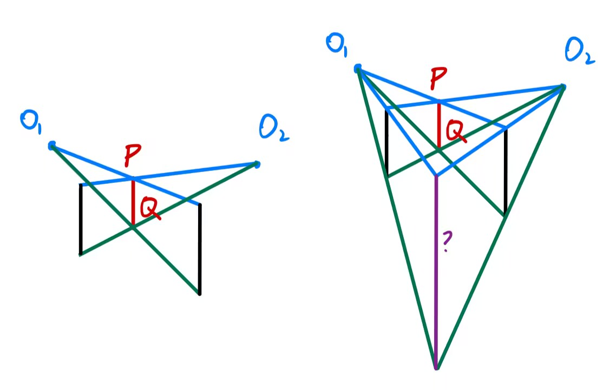
我当时就有个疑问：第四条棱为什么这样画出来就是平行的呢？我把这个过程用数学语言描述出来：
叙述零： ∀ l 1 , l 2 , l 3 ⊆ R 2 , l 1 ∥ l 2 ∥ l 3 \forall\ l_1,l_2,l_3\subseteq\R^2,\ l_1\parallel l_2\parallel l_3 ∀ l 1 , l 2 , l 3 ⊆ R 2 , l 1 ∥ l 2 ∥ l 3 R 2 \R^2 R 2 α 1 , α 2 , α 3 , α 4 \alpha_1,\alpha_2,\alpha_3,\alpha_4 α 1 , α 2 , α 3 , α 4
∀ O 1 ∈ α 1 , O 2 ∈ α 4 , P , Q ∈ l 2 ( P ≠ Q ) O 1 P ∩ l 3 = P 3 , O 2 P ∩ l 1 = P 1 , O 1 P 1 ∩ O 2 P 3 = P 4 O 1 Q ∩ l 3 = Q 3 , O 2 Q ∩ l 1 = Q 1 , O 1 Q 1 ∩ O 2 Q 3 = Q 4 ⇒ P 4 Q 4 ∥ l 1 ∥ l 2 ∥ l 3 \begin{gathered}
\forall\ O_1\in\alpha_1,\ O_2\in\alpha_4,\ P,Q\in l_2(P\neq Q)\\
O_1P\cap l_3=P_3,\ O_2P\cap l_1=P_1,\ O_1P_1\cap O_2P_3=P_4\\
O_1Q\cap l_3=Q_3,\ O_2Q\cap l_1=Q_1,\ O_1Q_1\cap O_2Q_3=Q_4\\
\Rightarrow P_4Q_4\parallel l_1\parallel l_2\parallel l_3
\end{gathered}
∀ O 1 ∈ α 1 , O 2 ∈ α 4 , P , Q ∈ l 2 ( P = Q ) O 1 P ∩ l 3 = P 3 , O 2 P ∩ l 1 = P 1 , O 1 P 1 ∩ O 2 P 3 = P 4 O 1 Q ∩ l 3 = Q 3 , O 2 Q ∩ l 1 = Q 1 , O 1 Q 1 ∩ O 2 Q 3 = Q 4 ⇒ P 4 Q 4 ∥ l 1 ∥ l 2 ∥ l 3
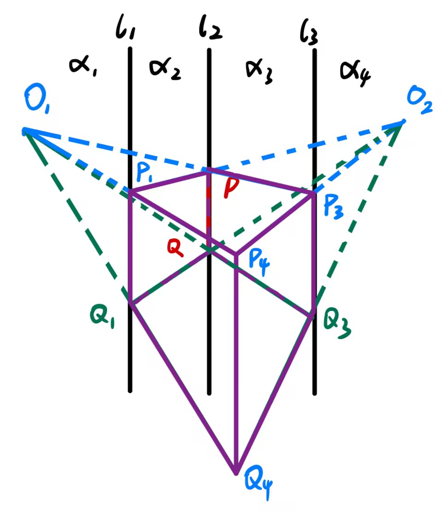
我还发现，如果沿着 l 2 l_2 l 2 P Q PQ P Q l 2 l_2 l 2 O 1 , O 2 O_1,O_2 O 1 , O 2 P 4 Q 4 P_4Q_4 P 4 Q 4 l 1 l_1 l 1
叙述一： ∀ l 4 , l 1 , l 2 , l 3 , l 5 ⊆ R 2 , l 4 ∥ l 1 ∥ l 2 ∥ l 3 ∥ l 5 \forall\ l_4,l_1,l_2,l_3,l_5\subseteq\R^2,\ l_4\parallel l_1\parallel l_2\parallel l_3\parallel l_5 ∀ l 4 , l 1 , l 2 , l 3 , l 5 ⊆ R 2 , l 4 ∥ l 1 ∥ l 2 ∥ l 3 ∥ l 5
∀ O 1 ∈ l 4 , O 2 ∈ l 5 , P , Q ∈ l 2 ( P ≠ Q ) O 1 P ∩ l 3 = P 3 , O 2 P ∩ l 1 = P 1 , O 1 P 1 ∩ O 2 P 3 = P 4 O 1 Q ∩ l 3 = Q 3 , O 2 Q ∩ l 1 = Q 1 , O 1 Q 1 ∩ O 2 Q 3 = Q 4 ⇒ P 4 Q 4 ∥ l 1 ∥ l 2 ∥ l 3 ∥ l 4 ∥ l 5 If d l 4 → l 1 , d l 1 → l 2 , d l 2 → l 3 , d l 3 → l 5 = Constant Then d P 4 → l 4 = Constant If P Q = Constant Then P 4 Q 4 = Constant \begin{gathered}
\forall\ O_1\in l_4,\ O_2\in l_5,\ P,Q\in l_2(P\neq Q)\\
O_1P\cap l_3=P_3,\ O_2P\cap l_1=P_1,\ O_1P_1\cap O_2P_3=P_4\\
O_1Q\cap l_3=Q_3,\ O_2Q\cap l_1=Q_1,\ O_1Q_1\cap O_2Q_3=Q_4\\
\Rightarrow P_4Q_4\parallel l_1\parallel l_2\parallel l_3\parallel l_4\parallel l_5\\
\text{If}\quad d_{l_4\rightarrow l_1},d_{l_1\rightarrow l_2},d_{l_2\rightarrow l_3},d_{l_3\rightarrow l_5}=\text{Constant}\\
\text{Then}\quad d_{P_4\rightarrow l_4}=\text{Constant}\\
\text{If}\quad PQ=\text{Constant}\\
\text{Then}\quad P_4Q_4 =\text{Constant}
\end{gathered}
∀ O 1 ∈ l 4 , O 2 ∈ l 5 , P , Q ∈ l 2 ( P = Q ) O 1 P ∩ l 3 = P 3 , O 2 P ∩ l 1 = P 1 , O 1 P 1 ∩ O 2 P 3 = P 4 O 1 Q ∩ l 3 = Q 3 , O 2 Q ∩ l 1 = Q 1 , O 1 Q 1 ∩ O 2 Q 3 = Q 4 ⇒ P 4 Q 4 ∥ l 1 ∥ l 2 ∥ l 3 ∥ l 4 ∥ l 5 If d l 4 → l 1 , d l 1 → l 2 , d l 2 → l 3 , d l 3 → l 5 = Constant Then d P 4 → l 4 = Constant If P Q = Constant Then P 4 Q 4 = Constant
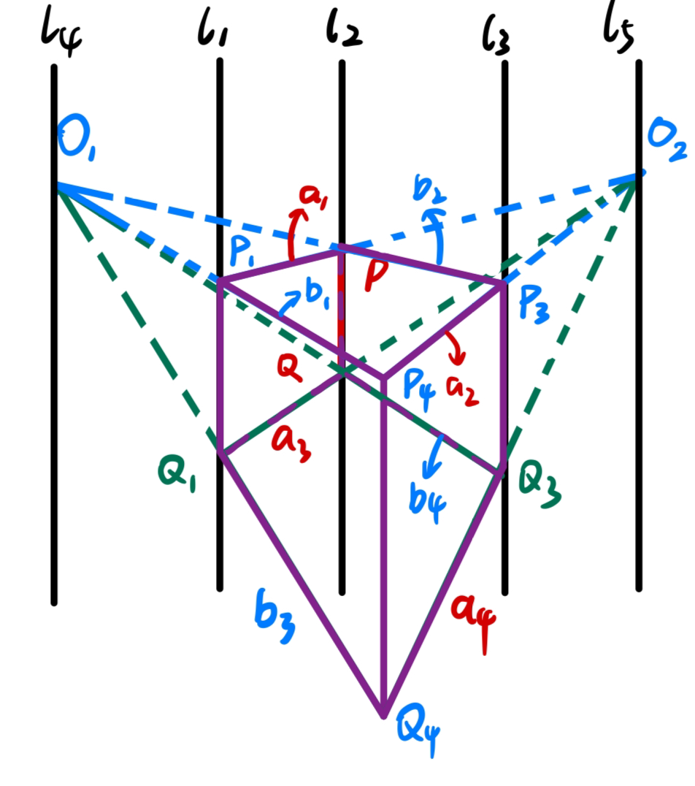
这看起来太复杂了。于是当时的我想把这个问题转换为一个更简单的问题，从而求解。
我发现 P 4 , Q 4 P_4,Q_4 P 4 , Q 4 l 2 l_2 l 2 P P P O 1 , O 2 O_1,O_2 O 1 , O 2 l 3 , l 1 l_3,l_1 l 3 , l 1 P 3 , P 1 P_3,P_1 P 3 , P 1 O 1 P 1 , O 2 P 3 O_1P_1,O_2P_3 O 1 P 1 , O 2 P 3 P 4 P_4 P 4 P 4 P_4 P 4
同样地，如果 O 1 , O 2 O_1,O_2 O 1 , O 2
叙述二： ∀ l 4 , l 1 , l 2 , l 3 , l 5 ⊆ R 2 , l 4 ∥ l 1 ∥ l 2 ∥ l 3 ∥ l 5 \forall\ l_4,l_1,l_2,l_3,l_5\subseteq\R^2,\ l_4\parallel l_1\parallel l_2\parallel l_3\parallel l_5 ∀ l 4 , l 1 , l 2 , l 3 , l 5 ⊆ R 2 , l 4 ∥ l 1 ∥ l 2 ∥ l 3 ∥ l 5
∀ O 1 ∈ l 4 , O 2 ∈ l 5 , P ∈ l 2 O 1 P ∩ l 3 = P 3 , O 2 P ∩ l 1 = P 1 , O 1 P 1 ∩ O 2 P 3 = P 4 If d l 4 → l 1 , d l 1 → l 2 , d l 2 → l 3 , d l 3 → l 5 = Constant Then d P 4 → l 4 = Constant If ∣ y O 1 − y P ∣ , ∣ y O 2 − y P ∣ = Constant Then ∣ y O 1 − y P 4 ∣ = Constant \begin{gathered}
\forall\ O_1\in l_4,\ O_2\in l_5,\ P\in l_2\\
O_1P\cap l_3=P_3,\ O_2P\cap l_1=P_1,\ O_1P_1\cap O_2P_3=P_4\\
\text{If}\quad d_{l_4\rightarrow l_1},d_{l_1\rightarrow l_2},d_{l_2\rightarrow l_3},d_{l_3\rightarrow l_5}=\text{Constant}\\
\text{Then}\quad d_{P_4\rightarrow l_4}=\text{Constant}\\
\text{If}\quad |y_{O_1}-y_P|,\ |y_{O_2}-y_P|=\text{Constant}\\
\text{Then}\quad |y_{O_1}-y_{P_4}|=\text{Constant}\\
\end{gathered}
∀ O 1 ∈ l 4 , O 2 ∈ l 5 , P ∈ l 2 O 1 P ∩ l 3 = P 3 , O 2 P ∩ l 1 = P 1 , O 1 P 1 ∩ O 2 P 3 = P 4 If d l 4 → l 1 , d l 1 → l 2 , d l 2 → l 3 , d l 3 → l 5 = Constant Then d P 4 → l 4 = Constant If ∣ y O 1 − y P ∣ , ∣ y O 2 − y P ∣ = Constant Then ∣ y O 1 − y P 4 ∣ = Constant
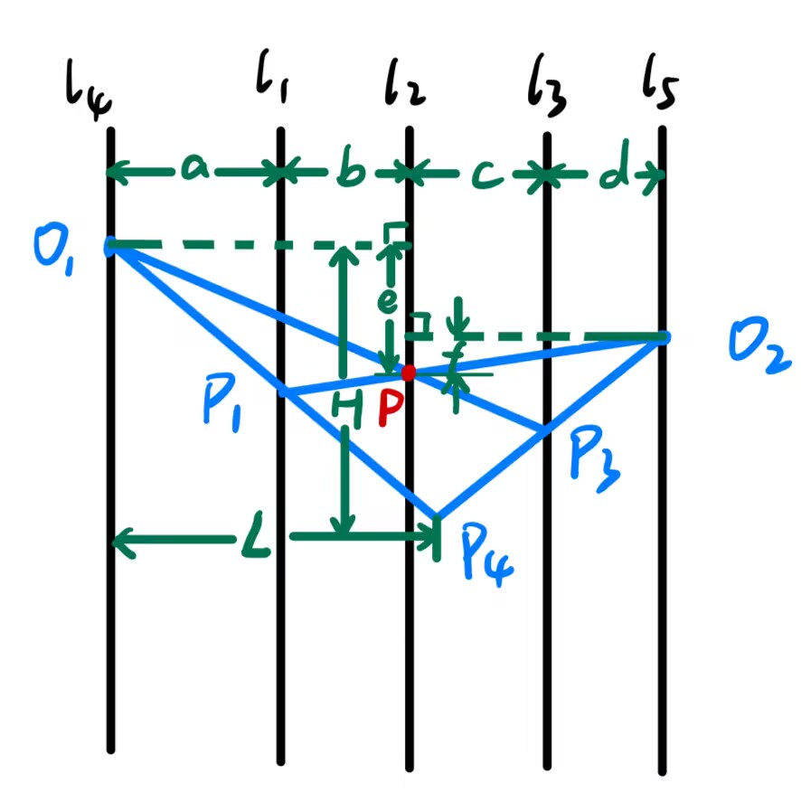
我在高中时想了很久，也没有一个很优美的解法。于是我转向了在当时（几乎）万能的解法：建系！以 O 1 O_1 O 1
More precisely, Let d l 4 → l 1 = a , d l 1 → l 2 = b , d l 2 → l 3 = c , d l 3 → l 5 = d Then d P 4 → l 4 = a ( c + d ) ( a + b + c ) a c + a d + b d Let ∣ y O 1 − y P ∣ = e , ∣ y O 2 − y P ∣ = f Then ∣ y O 1 − y P 4 ∣ = ( a + b + c ) ( c e + d e + b f ) a c + a d + b d Let ∣ y O 1 − y Q ∣ = e ′ Then ∣ y P 4 − y Q 4 ∣ = ( a + b + c ) ( c + d ) a c + a d + b d ∣ e − e ′ ∣ = Constant ⋅ P Q undefined \begin{gathered}
\text{More precisely, Let}\quad d_{l_4\rightarrow l_1}=a,\ d_{l_1\rightarrow l_2}=b,\ d_{l_2\rightarrow l_3}=c,\ d_{l_3\rightarrow l_5}=d\\
\text{Then}\quad d_{P_4\rightarrow l_4}=\frac{a(c+d)(a+b+c)}{ac+ad+bd}\\
\text{Let}\quad |y_{O_1}-y_P|=e,\ |y_{O_2}-y_P|=f\\
\text{Then}\quad |y_{O_1}-y_{P_4}|=\frac{(a+b+c)(ce+de+bf)}{ac+ad+bd}\\
\text{Let}\quad |y_{O_1}-y_Q|=e'\\
\text{Then}\quad |y_{P_4}-y_{Q_4}|=\frac{(a+b+c)(c+d)}{ac+ad+bd}|e-e'|=\text{Constant}\cdot \overlinesegment{PQ}
\end{gathered}
More precisely, Let d l 4 → l 1 = a , d l 1 → l 2 = b , d l 2 → l 3 = c , d l 3 → l 5 = d Then d P 4 → l 4 = a c + a d + b d a ( c + d ) ( a + b + c ) Let ∣ y O 1 − y P ∣ = e , ∣ y O 2 − y P ∣ = f Then ∣ y O 1 − y P 4 ∣ = a c + a d + b d ( a + b + c ) ( c e + d e + b f ) Let ∣ y O 1 − y Q ∣ = e ′ Then ∣ y P 4 − y Q 4 ∣ = a c + a d + b d ( a + b + c ) ( c + d ) ∣ e − e ′ ∣ = Constant ⋅ P Q
终于得证！虽然过程不是很漂亮啦。不过我一直想着，由透视画法导出的结论，一定可以通过透视过程本身来导出。但因为高中学业繁重，并且能力不足，这个想法就一直被搁置了。
直到最近，我才把这些想法捡起来，并且决心要彻底解决这个问题。我在知乎上看到一篇很好的文章：透视中的几何原理初步 - 知乎 。这篇文章是所有我所需要的。我从中选取并整理了一部分与这个问题相关的知识放在这里。让我们开始吧！
以下会涉及一些拓扑学相关内容，对我们理解平面透视的数学原理没有太大的影响。如果你对此感兴趣，可以去看看拓扑学入门0——欧几里得空间的拓扑 - 知乎 和拓扑学(2) - 知乎 。
视野的数学描述与透视的导出
视野与视球面
经验与理论可以告诉我们，我们所处的空间可以看成平直的、具有三个维度的空间，也就是三维 Euclid 空间 R 3 \R^3 R 3 R 3 \R^3 R 3 0 0 0 视野 」。现在的问题是，我们的视野究竟具有怎样的拓扑结构呢？
不考虑光的衍射与介质不均匀等问题，那么我们可以大致认为，光是沿着直线传播的。如果以观测点为顶点在空间作一条射线，那么射线上的所有点在我们的眼球中只能响应为一个单一的信号，这其实是一种等价关系 ∼ ∼ ∼ S 2 S^2 S 2
S 2 = ( R 3 − 0 ) / ∼ S^2=(\R^3-0)/\sim
S 2 = ( R 3 − 0 ) / ∼
就是如此构造出来的一个拓扑空间，所以我们认为，视野具有二维球面的拓扑结构，称之为视球面 。这意味着，如果存在一个密封空心球形的画布，我们在它的内侧绘画，那么看画者处于球心就可以还原出真实的视觉。
为了便于理解，我画了个示意图：
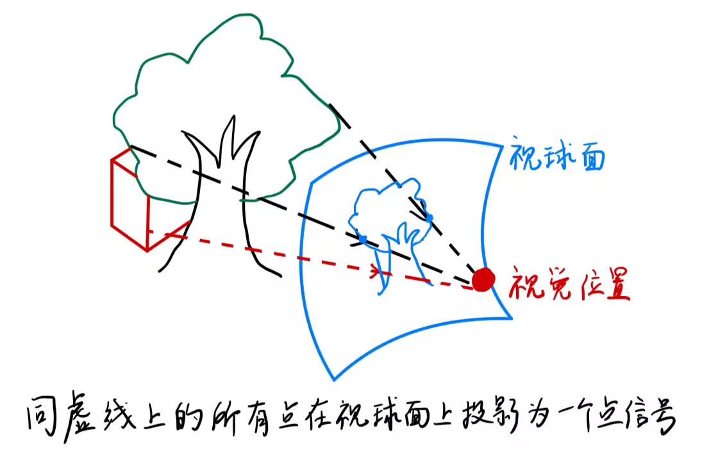
球面上的几何基础
在涉及球的问题中，与其在空间中使用直角坐标 ( x , y , z ) (x,y,z) ( x , y , z ) ( r , θ , φ ) (r,\theta,\varphi) ( r , θ , φ )
{ x = r sin θ cos φ y = r sin θ sin φ z = r cos θ ( r ≥ 0 , 0 ≤ θ ≤ π ) \begin{cases}
x = r\sin\theta\cos\varphi\\
y=r\sin\theta\sin\varphi\\
z=r\cos\theta
\end{cases}
(r\ge0,\ 0\le\theta\le\pi)
⎩ ⎪ ⎪ ⎨ ⎪ ⎪ ⎧ x = r sin θ cos φ y = r sin θ sin φ z = r cos θ ( r ≥ 0 , 0 ≤ θ ≤ π )
其中我们也把 z z z 极轴 。习惯上，我们称 θ \theta θ 余纬度 ，φ \varphi φ 经度 。在有时候，使用纬度 ϕ = π / 2 − θ \phi=\pi/2-\theta ϕ = π / 2 − θ
有了空间的球坐标系之后，我们可以直接方便地把 S 2 S^2 S 2 R 3 \R^3 R 3 r = 1 r=1 r = 1 ( θ , φ ) (\theta,\varphi) ( θ , φ ) S 2 S^2 S 2 R 3 − { 0 } \R^3-\{0\} R 3 − { 0 } S 2 S^2 S 2
σ : ( R 3 − { 0 } ) → S 2 ( r , θ , φ ) ↦ ( θ , φ ) \begin{gathered}
\sigma:(\R^3-\{0\})\rightarrow S^2\\
(r,\theta,\varphi)\mapsto(\theta,\varphi)
\end{gathered}
σ : ( R 3 − { 0 } ) → S 2 ( r , θ , φ ) ↦ ( θ , φ )
这个投影映射也被称为视球面投影 。
直线与平面在视球面上的投影
考虑空间上距离原点为 d d d t t t
{ r = t 2 + d 2 θ = arctan d t φ = φ 0 \begin{cases}
r = \sqrt{t^2 + d^2} \\
\theta=\arctan\frac{d}{t}\\
\varphi = \varphi_0
\end{cases}
⎩ ⎪ ⎪ ⎨ ⎪ ⎪ ⎧ r = t 2 + d 2 θ = arctan t d φ = φ 0
其中 t t t
( θ = arctan d t , φ = φ 0 ) (\theta=\arctan\frac{d}{t},\varphi = \varphi_0)
( θ = arctan t d , φ = φ 0 )
这是球面上的一条经线，令 t → ∞ t\rightarrow\infin t → ∞
lim t → + ∞ ( θ , φ ) = ( π − , φ 0 ) lim t → − ∞ ( θ , φ ) = ( 0 + , φ 0 ) \lim_{t\rightarrow+\infin}(\theta,\varphi)=(\pi-,\varphi_0)\\
\lim_{t\rightarrow-\infin}(\theta,\varphi)=(0+,\varphi_0)
t → + ∞ lim ( θ , φ ) = ( π − , φ 0 ) t → − ∞ lim ( θ , φ ) = ( 0 + , φ 0 )
可见，在空间中无限延展的直线投影在视球面上是有限的，并且直线的无穷远处的投影对应视球面上的两个端点，被称为消失点 。直线的消失点位于球面的两极，两极在空间中的连线与直线平行。并且我们可以看到，由于 θ = 0 , π \theta=0,\pi θ = 0 , π φ \varphi φ d d d φ 0 \varphi_0 φ 0
综上所述，可以如下表述：空间中一族平行线在视球面上投影为一族经线，并且消失在同一对极点上 。
现在考虑空间中的平面在视球面上的投影性质。考虑一不过原点的平面，那么取平面法线方向为极轴建立球坐标系，那么平面约束方程可以写为：
r cos θ = const = z 0 r\cos\theta=\text{const}=z_0
r cos θ = const = z 0
其中 z 0 z_0 z 0
不妨假设 z 0 < 0 z_0<0 z 0 < 0 r r r ∣ z 0 ∣ |z_0| ∣ z 0 ∣ + ∞ +\infin + ∞ θ \theta θ ( π / 2 , π ] (π/2,π] ( π / 2 , π ]
lim r → ∞ θ = π / 2 \lim_{r\rightarrow\infin}\theta=\pi/2
r → ∞ lim θ = π / 2
这正是赤道本身，并且这与 z 0 z_0 z 0 空间中一个平面在视球面上的投影是一个半球面，并且一族平行的平面消失于同一圈赤道 。
现在给定一个平面，在这个平面内任意取一条直线，那么这条直线在视球面上的投影必定是这个平面的投影的子集。在无穷远处， 这条直线在视球面中的一对消失点必然处于平面的消失圈上。而考虑空间中任意与该平面平行的直线，由于我们必定能找到平面内的一条直线与给定直线平行，而平行线消失于同一对极点，所以我们可以得到更加强的结论：如果一条直线平行于（或者属于）某平面，那么直线的一对消失点位于平面的消失圈上 。
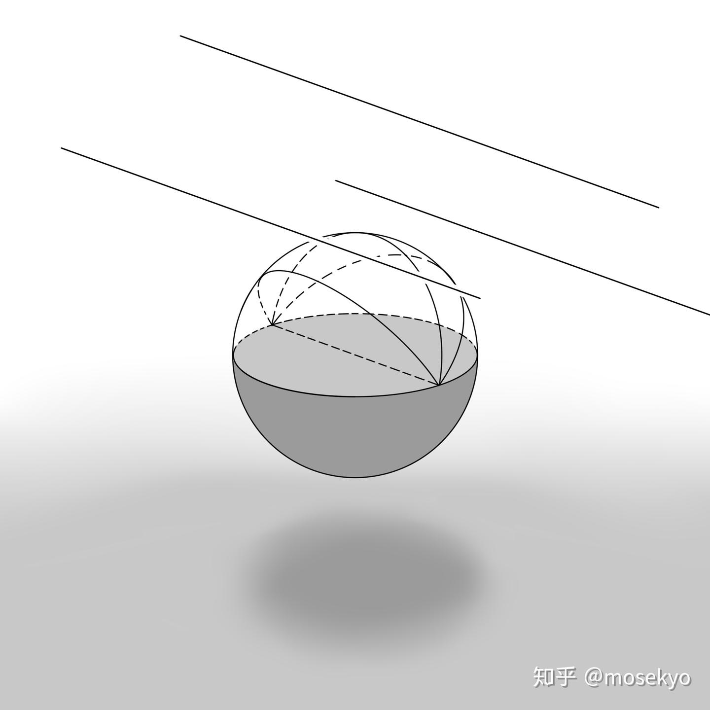
画布投影
由于球面形状的画布很难存在，我们在现实中只能将图画在一个平面上。如何把视球面上的图像映射到平面画布上，则属于画布投影 的范畴。
画布投影的定义为一个连续的单射：
σ : S → U \sigma:S\rightarrow U
σ : S → U
由于 S 2 S^2 S 2 R 2 \R^2 R 2 S ≠ S 2 S≠S^2 S = S 2
其中 S S S U U U S 2 S^2 S 2 R 2 \R^2 R 2 σ \sigma σ 透视 一词指的是选定了画布投影之后，如何在画布上体现画像对应现实中的空间关系的一系列方法或规则。
现在介绍一类较常见的画布投影方式——球轴平面投影
λ π a : { S 2 ∣ θ < arccos a } → R 2 ( θ , φ ) ↦ λ ( 1 − a ) sin θ cos θ − a ( cos φ , sin φ ) \begin{gathered}
\lambda\pi_a:\{S^2|\theta<\arccos a\}\rightarrow\R^2\\
(\theta,\varphi)\mapsto\lambda\frac{(1-a)\sin\theta}{\cos\theta-a}(\cos\varphi,\sin\varphi)
\end{gathered}
λ π a : { S 2 ∣ θ < arccos a } → R 2 ( θ , φ ) ↦ λ cos θ − a ( 1 − a ) sin θ ( cos φ , sin φ )
其中 − 1 ≤ a < 1 -1\le a<1 − 1 ≤ a < 1 λ > 0 \lambda>0 λ > 0 z = a z=a z = a z = λ z=\lambda z = λ θ = 0 \theta=0 θ = 0 央点 ，它是画布上的缩放关系空间分布的对称点。
当 a = 0 a=0 a = 0 球心投影 ：
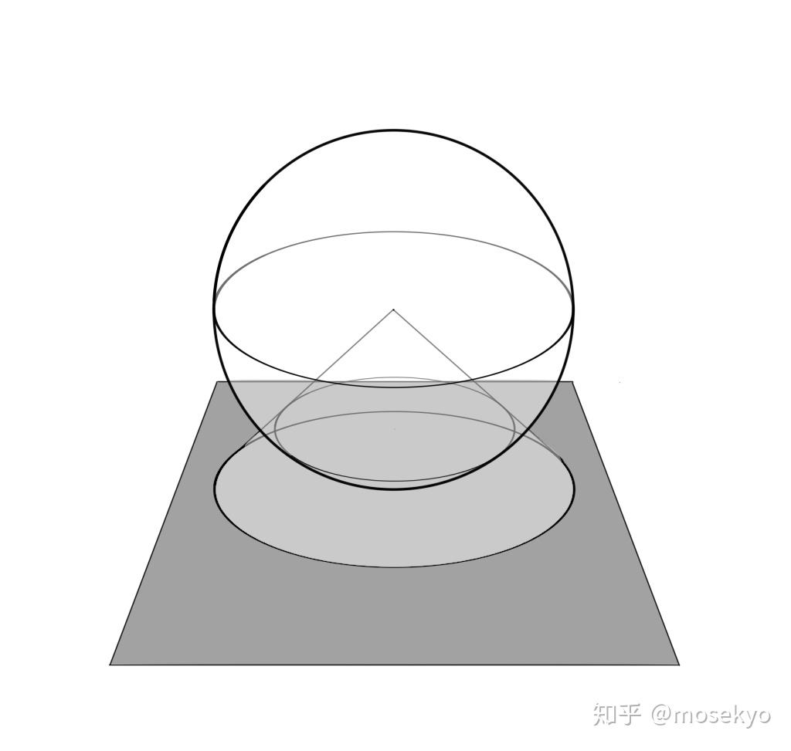
λ π 0 : { S 2 ∣ θ < π 2 } → R 2 ( θ , φ ) ↦ λ tan θ ( cos φ , sin φ ) \begin{gathered}
\lambda\pi_0:\{S^2|\theta<\frac{\pi}{2}\}\rightarrow\R^2\\
(\theta,\varphi)\mapsto\lambda\tan\theta(\cos\varphi,\sin\varphi)
\end{gathered}
λ π 0 : { S 2 ∣ θ < 2 π } → R 2 ( θ , φ ) ↦ λ tan θ ( cos φ , sin φ )
λ π 0 \lambda\pi_0 λ π 0 λ π 0 \lambda\pi_0 λ π 0 R 3 \R^3 R 3 0 0 0
平面透视画法
平面射影几何中的无穷远点
在 Euclid 平面几何中，两直线如果永远不相交，便一定平行。在平面射影几何中，我们在除 R 2 \R^2 R 2 无穷远点 的概念，相对地称原来 R 2 \R^2 R 2 有限远点 。我们规定：
每一条 Euclid 几何中的直线过且仅过一个无穷远点；
两条 Euclid 几何中的直线平行当且仅当它们经过同一个无穷远点；
所有的无穷远点构成一条不通过所有有限远点直线，这条直线被称为无穷远直线 。
从这些描述可以看出，所有无穷远点构成的集合具有一维投影空间 P 1 P^1 P 1
如果给定两个有限远点，那么它们确定的直线就是在 Euclid 几何中确定的直线；
如果给定一个有限远点、一个无穷远点，那么它们确定的直线过有限远点、并且平行于任何过该无穷远点的直线；
如果给定任意两个无穷远点，那么它们确定的直线是无穷远直线。
引入射影几何中无穷远点的概念，有利于在平面透视理论中精简我们的语言。无穷远点并不是虚构的概念，实际上，由于 R 2 \R^2 R 2 ( D 2 ) ∘ = { ( x , y ) ∈ R 2 ∣ x 2 + y 2 < 1 } (D^2)^\circ=\{(x,y)\in\R^2|x^2+y^2<1\} ( D 2 ) ∘ = { ( x , y ) ∈ R 2 ∣ x 2 + y 2 < 1 } ∂ D 2 = C 1 \partial D^2=C^1 ∂ D 2 = C 1 D 2 D^2 D 2 P 2 P^2 P 2 C 1 C^1 C 1 R 2 \R^2 R 2
球心投影的平直性质
由于球心投影是从球心直接把视球面投影到平面上，而视球面也是通过空间上每一点向球心投影得到，所以我们可以忽略中间过程的视球面、直接把球心投影看成把空间经过原点投影到平面上。这也是我们称球心投影画法为平面透视 的缘由。球心投影一个很好的性质就是它把视球面上的测地线投影为画布上的直线 ，这是由于视球面上的测地线是空间中直线的像，而直线经过平面投影必须成直线。
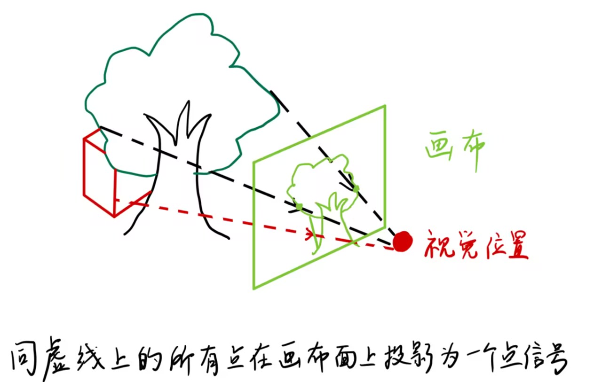
球心投影在 Euclid 几何中只能作用于视球面 θ < π / 2 \theta<\pi/2 θ < π / 2 θ = π / 2 \theta=\pi/2 θ = π / 2 tan θ \tan\theta tan θ θ = π / 2 \theta=\pi/2 θ = π / 2 θ < π / 2 \theta<\pi/2 θ < π / 2 θ = π / 2 \theta=\pi/2 θ = π / 2 在射影几何意义上，空间中的直线在画布中必消失于一点，并且空间中的直线平行当且仅当它们在画布中消失于同一点 。
对于平面的消失我们也有类似的结论。在视球面中，平面消失于一条赤道。由于赤道在 S 2 S^2 S 2 θ < π / 2 \theta<\pi/2 θ < π / 2 θ = π / 2 \theta=\pi/2 θ = π / 2 在射影几何意义上，空间中的平面在画布中必消失于一条直线，并且空间中的平面平行当且仅当它们在画布中消失于同一直线 。
在视球面中，如果直线与平面平行，那么直线的一对消失极点位于平面的消失圈上。由于我们把赤道、消失点等投影到画布上射影几何意义的直线与点了，它们之间的包含关系不会改变。所以我们得到：在射影几何意义上，若空间中一直线平行于（或属于）一平面，那么直线的消失点位于平面的消失线上 。
平面透视中的距离关系
平面透视中一个很重要的问题就是如何在画面中表现在空间中等距的一系列点，也就是画布中的距离如何与现实中的距离相对应的问题。
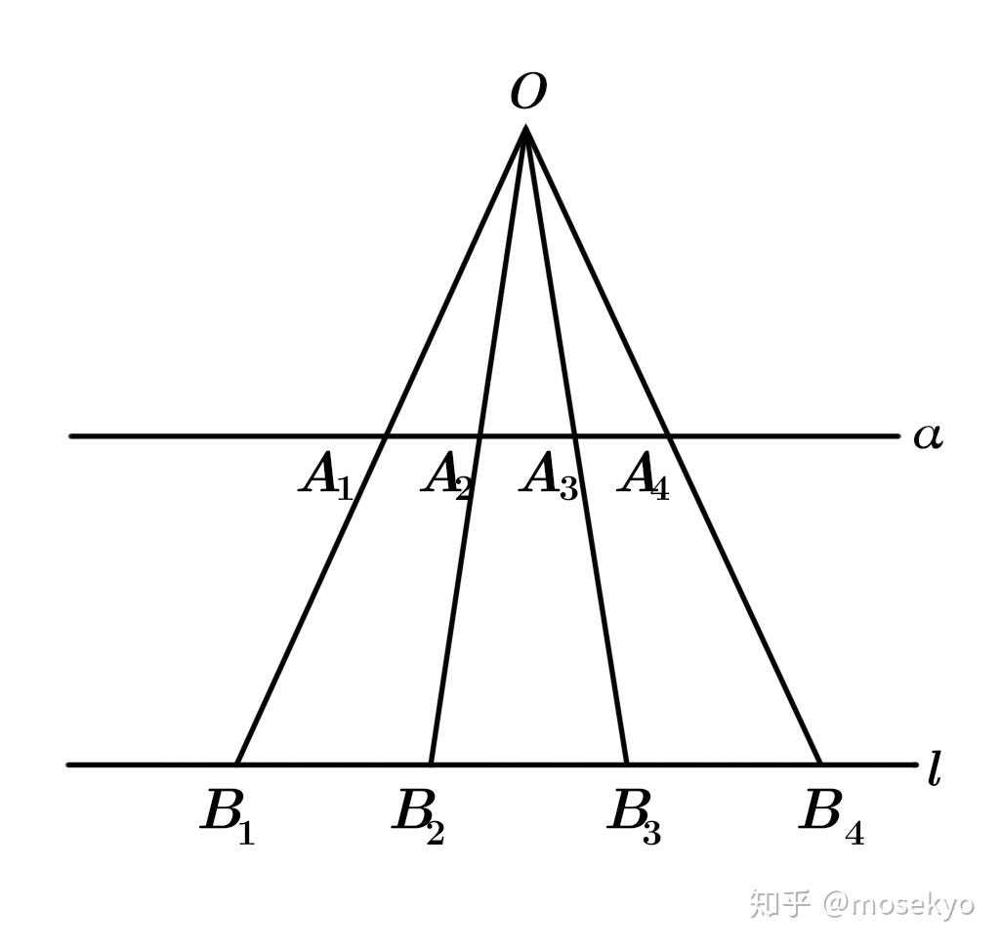
如果有一条直线平行于投影面，那么直线上等距的点 B 1 , B 2 , ⋅ ⋅ ⋅ B_1,B_2,··· B 1 , B 2 , ⋅ ⋅ ⋅ A 1 , A 2 , ⋅ ⋅ ⋅ A_1,A_2,··· A 1 , A 2 , ⋅ ⋅ ⋅ △ A 1 O A 2 ∼ △ B 1 O B 2 \triangle A_1OA_2\sim\triangle B_1OB_2 △ A 1 O A 2 ∼ △ B 1 O B 2 A 1 , A 2 , ⋅ ⋅ ⋅ A_1,A_2,··· A 1 , A 2 , ⋅ ⋅ ⋅
平面透视中正交系的几何关系
在视球面上，我们说三个点 A , B , C A,B,C A , B , C A ⃗ , B ⃗ , C ⃗ \vec{A},\vec{B},\vec{C} A , B , C 正交系 。确认正交系在画布上投影的位置是十分重要的，这是由于我们现实空间中的物体大多可以抽象为长方体，而各个长方体基本具备各边平行的性质。确定了正交系（也就是对应长方体三组棱的消失点）的位置，我们就可以较为方便地定出空间中各个点的位置。
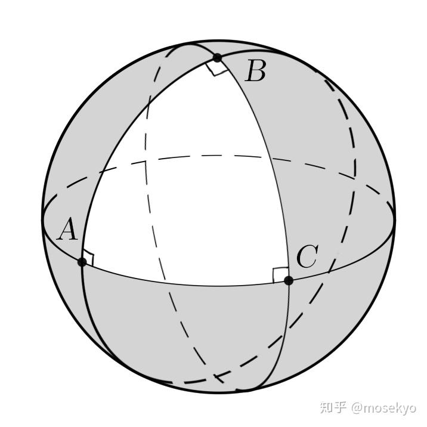
正交系有一个非常好的性质：正交系三点中任意一点都是过其他两点的赤道圈的对应极点 。
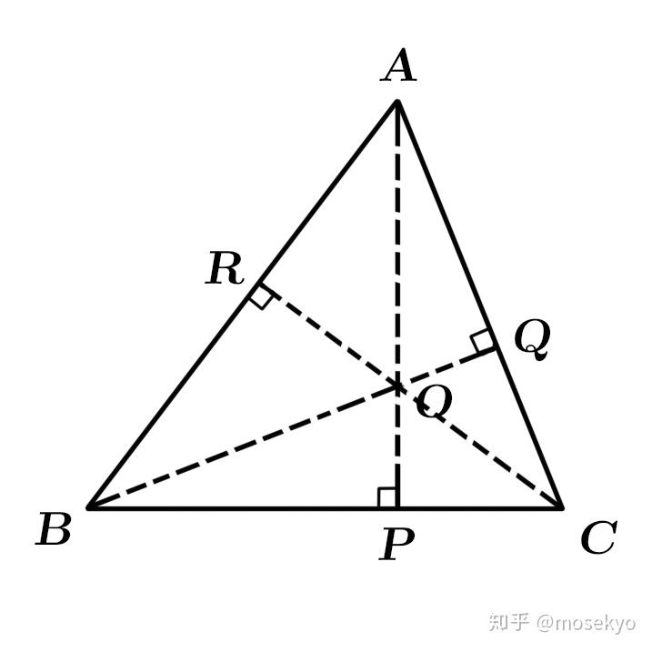
在画布中画出正交系的对应点 A , B , C A,B,C A , B , C O O O A O AO A O B C BC B C P P P A P AP A P B C BC B C A P ⊥ B C AP\perp BC A P ⊥ B C B Q ⊥ A C BQ\perp AC B Q ⊥ A C C R ⊥ A B CR\perp AB C R ⊥ A B 央点 O O O 是正交系 A , B , C A,B,C A , B , C 三点构成的 △ A B C \triangle ABC △ A B C 的垂心 。
由于 A P , B Q , C R AP,BQ,CR A P , B Q , C R π / 2 \pi/2 π / 2 O O O O A = λ tan θ OA=\lambda\tan\theta O A = λ tan θ
O P = λ tan ( π / 2 − θ ) = λ cot θ OP=\lambda\tan(\pi/2-\theta)=\lambda\cot\theta
O P = λ tan ( π / 2 − θ ) = λ cot θ
更一般地有：
O A ⋅ O P = O B ⋅ O Q = O C ⋅ O R = λ 2 OA⋅OP=OB⋅OQ=OC⋅OR=\lambda^2
O A ⋅ O P = O B ⋅ O Q = O C ⋅ O R = λ 2
也就是说，假设我们不知道球心投影的央点在何处，λ \lambda λ O O O λ \lambda λ 一个正交系同样蕴含了平面投影中的全部信息 。当一个正交系三点都是有限远点的时候，我们称这个正交系为三点透视 。
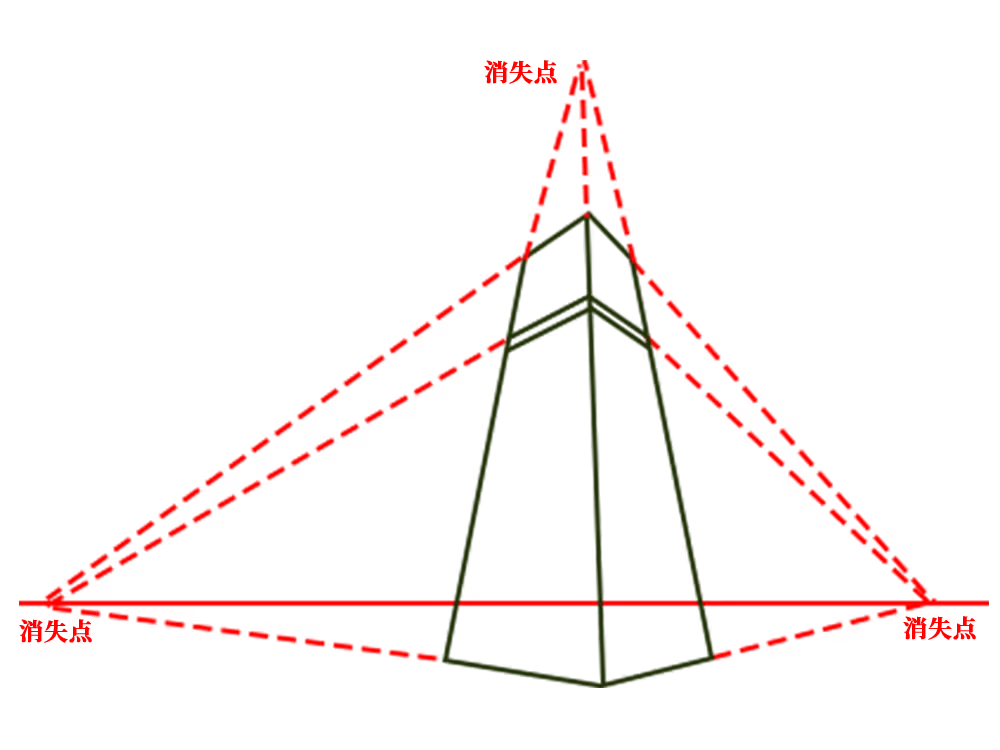
考虑一种特殊情况，正交系中某一点（假设为 A A A O O O B C BC B C A A A B C BC B C
O B ⋅ O C = λ 2 OB⋅OC=\lambda^2
O B ⋅ O C = λ 2
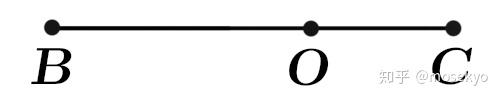
此时我们需要在确定 B C BC B C O O O λ \lambda λ 两点透视 。
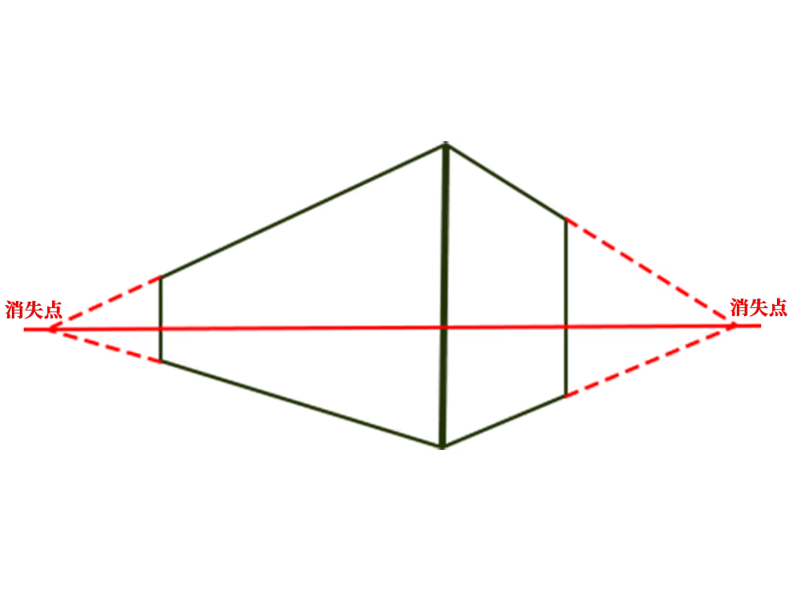
更极端地，我们考虑正交系中有两点是无穷远点（假设为 A , B A,B A , B O O O C C C A A A B B B λ \lambda λ 一点透视 。
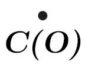
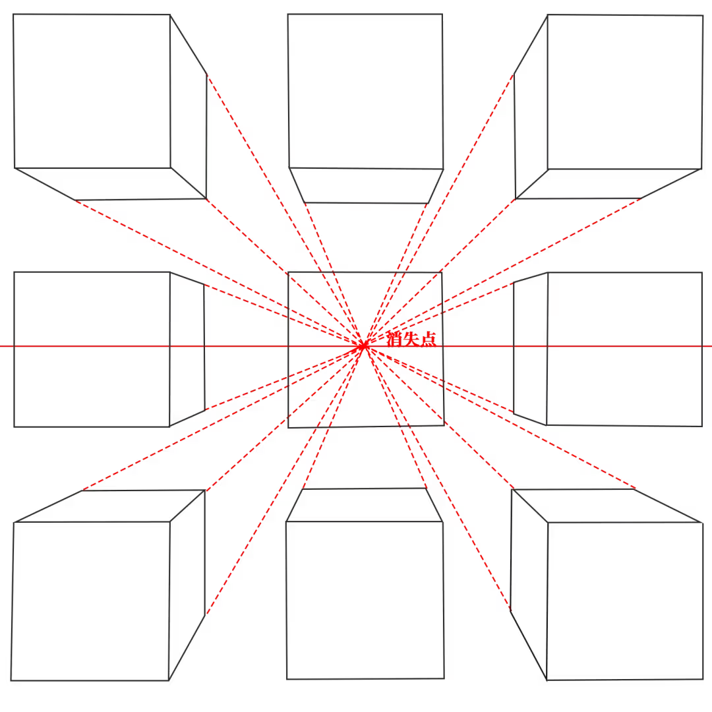
了解了以上知识，我们就可以将叙述一转变为一个三维空间当中的问题。
（根据上文提到的知识）我们可以看出，叙述一其实是一个两点透视的例子。
建立 R 3 \R^3 R 3 R 2 \R^2 R 2
∃ a 1 , a 2 , a 3 , a 4 , b 1 , b 2 , b 3 , b 4 , l 1 ′ , l 2 ′ , l 3 ′ , l 4 ′ ⊆ R 3 , a 1 ↦ P 1 P , a 2 ↦ P 4 P 3 , a 3 ↦ Q 1 Q , a 4 ↦ Q 4 Q 3 , b 1 ↦ P 4 P 1 , b 2 ↦ P 3 P 1 , b 3 ↦ Q 4 Q 1 , b 4 ↦ Q 3 Q , l 1 ′ ↦ l 1 , l 2 ′ ↦ l 2 , l 3 ′ ↦ l 3 , l 4 ′ ↦ P 4 Q 4 \exists\ a_1,a_2,a_3,a_4,\ b_1,b_2,b_3,b_4,\ l^{'}_1,l^{'}_2,l^{'}_3,l^{'}_4\subseteq\R^3, \\a_1\mapsto P_1P,a_2\mapsto P_4P_3,a_3\mapsto Q_1Q,a_4\mapsto Q_4Q_3,\\
b_1\mapsto P_4P_1,b_2\mapsto P_3P_1,b_3\mapsto Q_4Q_1,b_4\mapsto Q_3Q,\\
l^{'}_1\mapsto l_1,l^{'}_2\mapsto l_2,l^{'}_3\mapsto l_3,l^{'}_4\mapsto P_4Q_4
∃ a 1 , a 2 , a 3 , a 4 , b 1 , b 2 , b 3 , b 4 , l 1 ′ , l 2 ′ , l 3 ′ , l 4 ′ ⊆ R 3 , a 1 ↦ P 1 P , a 2 ↦ P 4 P 3 , a 3 ↦ Q 1 Q , a 4 ↦ Q 4 Q 3 , b 1 ↦ P 4 P 1 , b 2 ↦ P 3 P 1 , b 3 ↦ Q 4 Q 1 , b 4 ↦ Q 3 Q , l 1 ′ ↦ l 1 , l 2 ′ ↦ l 2 , l 3 ′ ↦ l 3 , l 4 ′ ↦ P 4 Q 4
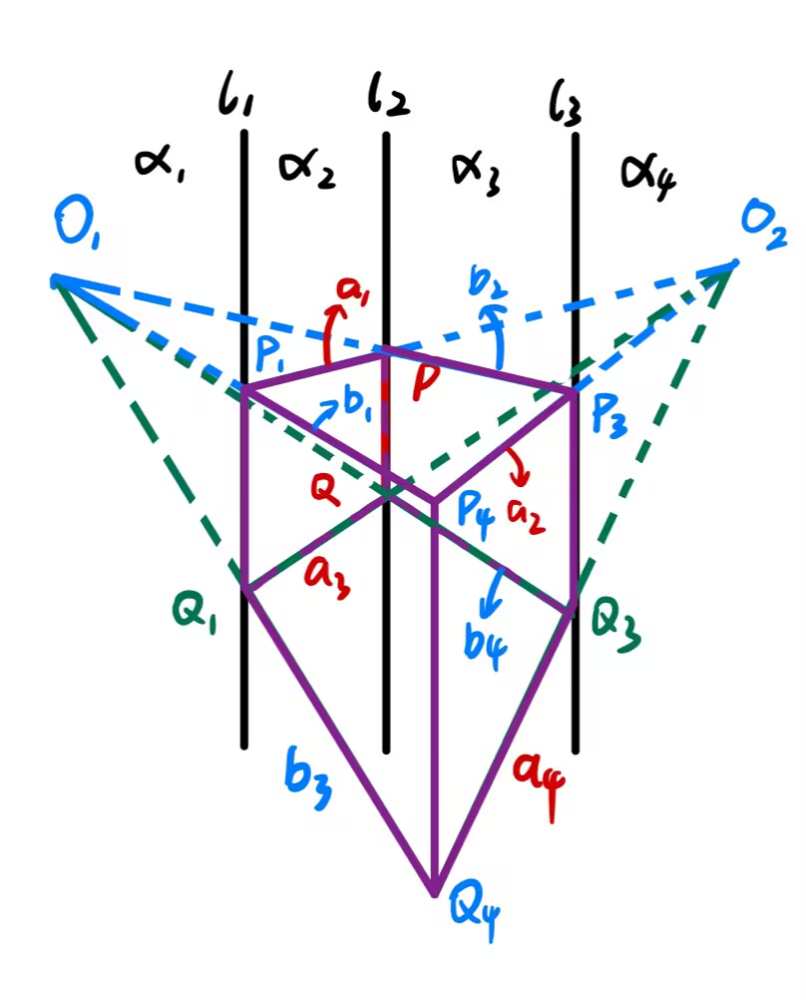
为了便于证明和理解，我们假设原 R 3 \R^3 R 3
∃ P 1 ′ , P ′ , P 3 ′ , P 4 ′ , Q 1 ′ , Q ′ , Q 3 ′ , Q 4 ′ ∈ R 3 , a 1 ∩ b 1 ∩ l 1 ′ = P 1 ′ ↦ P 1 , a 1 ∩ b 1 ∩ l 1 ′ = Q 1 ′ ↦ Q 1 , a 1 ∩ b 2 ∩ l 2 ′ = P ′ ↦ P , a 3 ∩ b 4 ∩ l 2 ′ = Q ′ ↦ Q , a 2 ∩ b 2 ∩ l 3 ′ = P 3 ′ ↦ P 3 , a 4 ∩ b 4 ∩ l 3 ′ = Q 3 ′ ↦ Q 3 , a 2 ∩ b 1 ∩ l 4 ′ = P 4 ′ ↦ P 4 , a 4 ∩ b 3 ∩ l 4 ′ = Q 4 ′ ↦ Q 4 \begin{gathered}
\exists\ P^{'}_1,P^{'},P^{'}_3,P^{'}_4,\ Q^{'}_1,Q^{'},Q^{'}_3,Q^{'}_4\in\R^3,\\
a_1\cap b_1\cap l^{'}_1=P^{'}_1\mapsto P_1,\ a_1\cap b_1\cap l^{'}_1=Q^{'}_1\mapsto Q_1,\ \\
a_1\cap b_2\cap l^{'}_2=P^{'}\mapsto P,\ a_3\cap b_4\cap l^{'}_2=Q^{'}\mapsto Q,\ \\
a_2\cap b_2\cap l^{'}_3=P^{'}_3\mapsto P_3,\ a_4\cap b_4\cap l^{'}_3=Q^{'}_3\mapsto Q_3,\ \\
a_2\cap b_1\cap l^{'}_4=P^{'}_4\mapsto P_4,\ a_4\cap b_3\cap l^{'}_4=Q^{'}_4\mapsto Q_4\ \\
\end{gathered}
∃ P 1 ′ , P ′ , P 3 ′ , P 4 ′ , Q 1 ′ , Q ′ , Q 3 ′ , Q 4 ′ ∈ R 3 , a 1 ∩ b 1 ∩ l 1 ′ = P 1 ′ ↦ P 1 , a 1 ∩ b 1 ∩ l 1 ′ = Q 1 ′ ↦ Q 1 , a 1 ∩ b 2 ∩ l 2 ′ = P ′ ↦ P , a 3 ∩ b 4 ∩ l 2 ′ = Q ′ ↦ Q , a 2 ∩ b 2 ∩ l 3 ′ = P 3 ′ ↦ P 3 , a 4 ∩ b 4 ∩ l 3 ′ = Q 3 ′ ↦ Q 3 , a 2 ∩ b 1 ∩ l 4 ′ = P 4 ′ ↦ P 4 , a 4 ∩ b 3 ∩ l 4 ′ = Q 4 ′ ↦ Q 4
在画布中，有
P 1 P ∩ P 4 P 3 ∩ Q 1 Q ∩ Q 4 Q 3 = O 2 P 3 P ∩ P 4 P 1 ∩ Q 3 Q ∩ Q 4 Q 1 = O 1 l 1 ∥ l 2 ∥ l 3 \begin{gathered}
P_1P\cap P_4P_3\cap Q_1Q\cap Q_4Q_3=O_2\\
P_3P\cap P_4P_1\cap Q_3Q\cap Q_4Q_1=O_1\\
l_1\parallel l_2 \parallel l_3
\end{gathered}
P 1 P ∩ P 4 P 3 ∩ Q 1 Q ∩ Q 4 Q 3 = O 2 P 3 P ∩ P 4 P 1 ∩ Q 3 Q ∩ Q 4 Q 1 = O 1 l 1 ∥ l 2 ∥ l 3
根据“在射影几何意义上，空间中的直线在画布中必消失于一点，并且空间中的直线平行当且仅当它们在画布中消失于同一点 ”，我们得到
a 1 ∥ a 2 ∥ a 3 ∥ a 4 , b 1 ∥ b 2 ∥ b 3 ∥ b 4 , l 1 ∩ l 2 ∩ l 3 = ∞ ⇒ l 1 ′ ∥ l 2 ′ ∥ l 3 ′ \begin{gathered}
a_1\parallel a_2\parallel a_3\parallel a_4,\ b_1\parallel b_2\parallel b_3\parallel b_4,\\
l_1\cap l_2\cap l_3=\infin\Rightarrow l'_{1}\parallel l'_{2}\parallel l'_{3}
\end{gathered}
a 1 ∥ a 2 ∥ a 3 ∥ a 4 , b 1 ∥ b 2 ∥ b 3 ∥ b 4 , l 1 ∩ l 2 ∩ l 3 = ∞ ⇒ l 1 ′ ∥ l 2 ′ ∥ l 3 ′
于是我们成功将二维平面 上的问题转移到了三维空间 中：
叙述三： ∀ a 1 , a 2 , a 3 , a 4 , b 1 , b 2 , b 3 , b 4 , l 1 , l 2 , l 3 , l 4 ⊆ R 3 \forall a_1,a_2,a_3,a_4,\ b_1,b_2,b_3,b_4,\ l_1,l_2,l_3,l_4\subseteq \R^3 ∀ a 1 , a 2 , a 3 , a 4 , b 1 , b 2 , b 3 , b 4 , l 1 , l 2 , l 3 , l 4 ⊆ R 3 a 1 , a 2 , a 3 , a 4 a_1,a_2,a_3,a_4 a 1 , a 2 , a 3 , a 4 b 1 , b 2 , b 3 , b 4 b_1,b_2,b_3,b_4 b 1 , b 2 , b 3 , b 4 l 1 , l 2 , l 3 , l 4 l_1,l_2,l_3,l_4 l 1 , l 2 , l 3 , l 4 a 1 ∥ a 2 ∥ a 3 ∥ a 4 , b 1 ∥ b 2 ∥ b 3 ∥ b 4 a_1\parallel a_2\parallel a_3\parallel a_4,\ b_1\parallel b_2\parallel b_3\parallel b_4 a 1 ∥ a 2 ∥ a 3 ∥ a 4 , b 1 ∥ b 2 ∥ b 3 ∥ b 4
If l 1 ∥ l 2 ∥ l 3 Then l 1 ∥ l 2 ∥ l 3 ∥ l 4 \begin{gathered}
\text{If}\quad l_1\parallel l_2\parallel l_3\\
\text{Then}\quad l_1\parallel l_2\parallel l_3\parallel l_4
\end{gathered}
If l 1 ∥ l 2 ∥ l 3 Then l 1 ∥ l 2 ∥ l 3 ∥ l 4
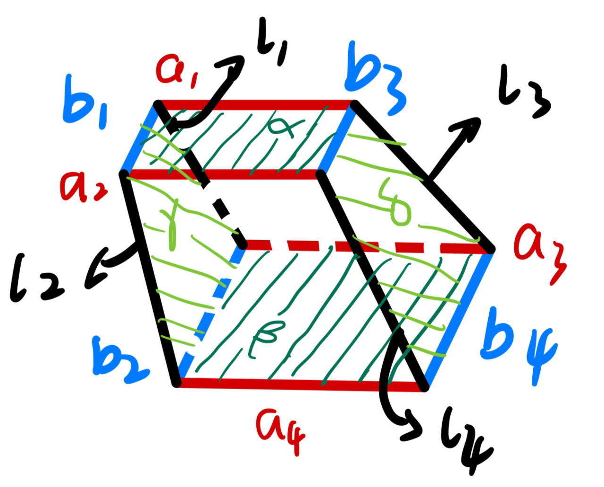
现在问题就变得十分容易解决了：
b 1 ∥ b 2 , l 1 ∥ l 2 ⇒ b 1 = b 2 b 1 ∥ b 3 , a 1 ∥ a 2 ⇒ b 1 = b 3 b 2 ∥ b 4 , a 3 ∥ a 4 ⇒ b 2 = b 4 b 3 ∥ b 4 , b 3 = b 4 ⇒ l 3 ∥ l 4 \begin{gathered}
b_1\parallel b_2,\ l_1\parallel l_2\Rightarrow b_1=b_2\\
b_1\parallel b_3,\ a_1\parallel a_2\Rightarrow b_1=b_3\\
b_2\parallel b_4,\ a_3\parallel a_4\Rightarrow b_2=b_4\\
b_3\parallel b_4,\ b_3=b_4\Rightarrow l_3\parallel l_4
\end{gathered}
b 1 ∥ b 2 , l 1 ∥ l 2 ⇒ b 1 = b 2 b 1 ∥ b 3 , a 1 ∥ a 2 ⇒ b 1 = b 3 b 2 ∥ b 4 , a 3 ∥ a 4 ⇒ b 2 = b 4 b 3 ∥ b 4 , b 3 = b 4 ⇒ l 3 ∥ l 4
我们还能解释为什么 P Q PQ P Q P 4 Q 4 P_4Q_4 P 4 Q 4
由平行于画布的直线上的距离关系，我们可以得到如下结论：在平行于画布的直线上的线段沿着该直线方向做平移运动，则它在画布上的投影线段也沿着投影直线做平移运动 。
P Q PQ P Q P Q PQ P Q P Q PQ P Q
还没结束…
等等，关于叙述三和叙述一之间，我们还差了一个东西：当灭点沿着平行线平移时，P 4 Q 4 P_4Q_4 P 4 Q 4
我们的第一想法肯定是：当 O 2 O_2 O 2 O 1 O_1 O 1 P Q PQ P Q P 3 Q 3 P_3Q_3 P 3 Q 3 P Q Q 3 P 3 PQQ_3P_3 P Q Q 3 P 3
我们肯定还想知道，l 5 l_5 l 5 在射影几何意义上，空间中的平面在画布中必消失于一条直线，并且空间中的平面平行当且仅当它们在画布中消失于同一直线 ”这个结论，我们可以很自然地猜想：面 P Q Q 1 P 1 , P 3 Q 3 Q 4 P 4 PQQ_1P_1,P_3Q_3Q_4P_4 P Q Q 1 P 1 , P 3 Q 3 Q 4 P 4 l 5 l_5 l 5
怎么证明呢？我们发现这两个面的特殊之处就是它们都过平行于画布的直线。根据立体几何知识可得：过平行于画布直线的平面，其与画布的交线与该直线平行 。（1）
接下来该研究灭线的性质了。我们知道空间平面上的点与央点连线再和画布的交点就是投影点。将平面无限延伸，相当于央点过投影点的射线与平面相交在无限远处。此时我们可以看作其平行于空间平面。于是有：
∀ α , β ⊆ R 3 , α ∥ β , ∃ γ ⊆ R 3 , γ ∩ α = l 1 , γ ∩ β = l 2 ⇒ l 1 ∥ l 2 \forall\ \alpha,\beta\subseteq\R^3,\ \alpha\parallel\beta,\ \exists\ \gamma\subseteq\R^3,\ \gamma\cap\alpha=l_1,\ \gamma\cap\beta=l_2\Rightarrow l_1\parallel l_2
∀ α , β ⊆ R 3 , α ∥ β , ∃ γ ⊆ R 3 , γ ∩ α = l 1 , γ ∩ β = l 2 ⇒ l 1 ∥ l 2
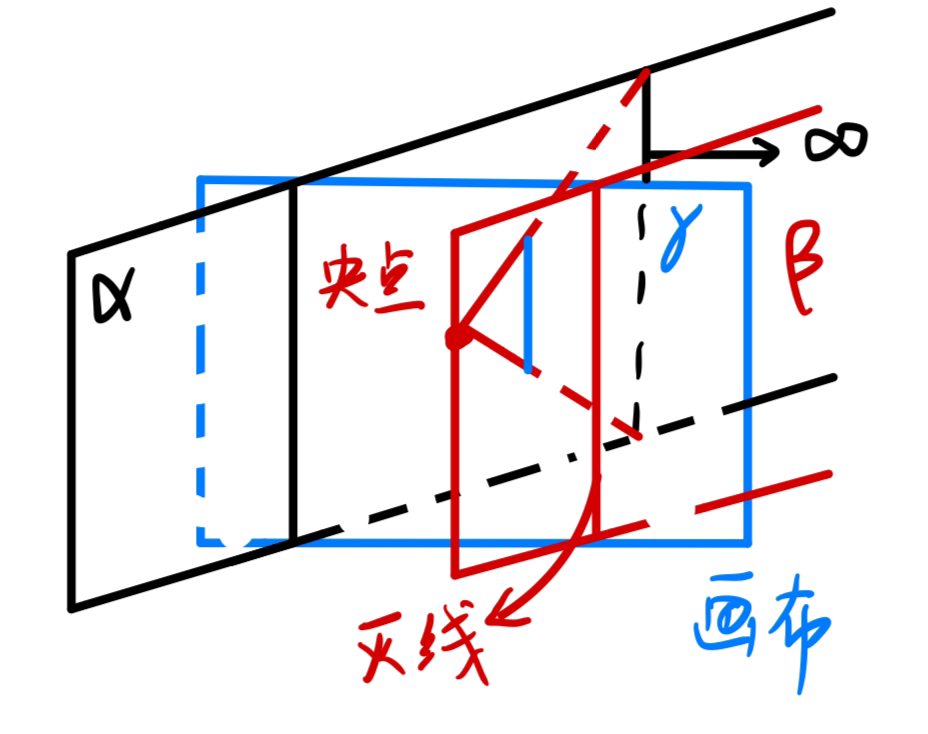
我们得到了另一个结论：与画布相交的平面，其灭线与交线平行 。（2）
结论（1）与（2） 可以导出：过平行于画布直线的平面，其灭线与该直线平行 。问题就这么解决了！
同样地，我们也可以证明平面 P Q Q 3 P 3 , P 1 Q 1 Q 4 P 4 PQQ_3P_3,P_1Q_1Q_4P_4 P Q Q 3 P 3 , P 1 Q 1 Q 4 P 4 l 4 l_4 l 4
由“面 P Q Q 1 P 1 , P 3 Q 3 Q 4 P 4 PQQ_1P_1,P_3Q_3Q_4P_4 P Q Q 1 P 1 , P 3 Q 3 Q 4 P 4 l 5 l_5 l 5 O 2 O_2 O 2 P Q Q 1 P 1 , P 3 Q 3 Q 4 P 4 PQQ_1P_1,P_3Q_3Q_4P_4 P Q Q 1 P 1 , P 3 Q 3 Q 4 P 4 O 2 O_2 O 2 P Q , P 3 Q 3 PQ,P_3Q_3 P Q , P 3 Q 3 P Q Q 1 ′ P 1 ′ , P 3 Q 3 Q 4 ′ P 4 ′ PQQ'_1P'_1,P_3Q_3Q'_4P'_4 P Q Q 1 ′ P 1 ′ , P 3 Q 3 Q 4 ′ P 4 ′
我们现在已经知道三个面不会改变了，剩下的三个面中还有一对平行的面：P 1 P P 3 P 4 , Q 1 Q Q 3 Q 4 P_1PP_3P_4,Q_1QQ_3Q_4 P 1 P P 3 P 4 , Q 1 Q Q 3 Q 4 O 1 , O 2 O_1,O_2 O 1 , O 2
P 1 P P 3 P 4 ∩ P 3 P 4 Q 4 Q 3 = P 4 P 3 P_1PP_3P_4\cap P_3P_4Q_4Q_3=P_4P_3
P 1 P P 3 P 4 ∩ P 3 P 4 Q 4 Q 3 = P 4 P 3
根据“在射影几何意义上，若空间中一直线平行于（或属于）一平面，那么直线的消失点位于平面的消失线上 ”，我们得到 P 4 P 3 P_4P_3 P 4 P 3 O 2 O_2 O 2 空间中的平面平行当且仅当它们在画布中消失于同一直线 ”，故这两个平面的灭线不同。于是我们得到一个非常重要的结论：
两不平行平面，其交线的灭点就是其灭线的交点。 ( ∗ ) (*) ( ∗ )
因此 O 2 O_2 O 2 P 1 P P 3 P 4 , Q 1 Q Q 3 Q 4 P_1PP_3P_4,Q_1QQ_3Q_4 P 1 P P 3 P 4 , Q 1 Q Q 3 Q 4 O 1 O_1 O 1
这真是振奋人心的时刻：O 1 O 2 O_1O_2 O 1 O 2 是面 P 1 P P 3 P 4 , Q 1 Q Q 3 Q 4 P_1PP_3P_4,Q_1QQ_3Q_4 P 1 P P 3 P 4 , Q 1 Q Q 3 Q 4 的灭线 。
因此，O 2 O_2 O 2 O 1 O_1 O 1 O 1 O_1 O 1 O 1 O_1 O 1 P 1 P P 3 P 4 , P Q Q 3 P 3 P_1PP_3P_4,PQQ_3P_3 P 1 P P 3 P 4 , P Q Q 3 P 3 结论 ( ∗ ) (*) ( ∗ ) O 1 O_1 O 1 P 3 P P_3P P 3 P P 3 P P_3P P 3 P P 1 P P 3 P 4 P_1PP_3P_4 P 1 P P 3 P 4 在此过程中以 P 3 P P_3P P 3 P 为轴旋转 。同理，面 Q 1 Q Q 3 Q 4 Q_1QQ_3Q_4 Q 1 Q Q 3 Q 4 在此过程中以 Q 3 Q Q_3Q Q 3 Q 为轴旋转 。
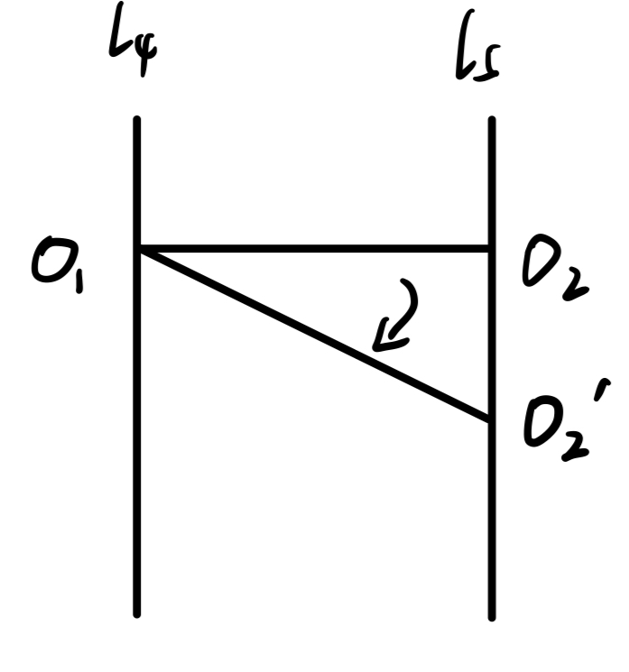
只剩最后一个面 P 1 Q 1 Q 4 P 4 P_1Q_1Q_4P_4 P 1 Q 1 Q 4 P 4
O 2 O 2 ′ ∥ P Q ∥ P 1 Q 1 , △ O 2 P Q ∼ △ O 2 P 1 Q 1 O_2O'_2\parallel PQ\parallel P_1Q_1,\ \triangle O_2PQ\sim\triangle O_2P_1Q_1
O 2 O 2 ′ ∥ P Q ∥ P 1 Q 1 , △ O 2 P Q ∼ △ O 2 P 1 Q 1
由此得到 P 1 Q 1 P_1Q_1 P 1 Q 1 在此过程中沿 l 1 l_1 l 1 平移 。根据“在平行于画布的直线上的线段沿着该直线方向做平移运动，则它在画布上的投影线段也沿着投影直线做平移运动 ”（这里不是很严谨，但结果很直观），P 1 Q 1 P_1Q_1 P 1 Q 1 P Q Q 3 P 3 PQQ_3P_3 P Q Q 3 P 3 P 1 Q 1 ∥ P Q Q 3 P 3 P_1Q_1\parallel PQQ_3P_3 P 1 Q 1 ∥ P Q Q 3 P 3 过平面外一平行直线只能做一个平行面 ，我们得到平面 P 1 Q 1 Q 4 P 4 P_1Q_1Q_4P_4 P 1 Q 1 Q 4 P 4
由“面 P 1 P P 3 P 4 P_1PP_3P_4 P 1 P P 3 P 4 P 3 P P_3P P 3 P Q 1 Q Q 3 Q 4 Q_1QQ_3Q_4 Q 1 Q Q 3 Q 4 Q 3 Q Q_3Q Q 3 Q P 1 Q 1 P_1Q_1 P 1 Q 1 P 1 Q 1 Q 4 P 4 P_1Q_1Q_4P_4 P 1 Q 1 Q 4 P 4
我们终于搞清楚了：O 2 O_2 O 2 在央点不变情况下 ，对应的平行六面体发生了错切变换 （Shear Mapping ）。这相当于保持面 P 1 Q 1 Q 4 P 4 , P Q Q 3 P 3 P_1Q_1Q_4P_4,PQQ_3P_3 P 1 Q 1 Q 4 P 4 , P Q Q 3 P 3 P 1 Q 1 Q 4 P 4 P_1Q_1Q_4P_4 P 1 Q 1 Q 4 P 4
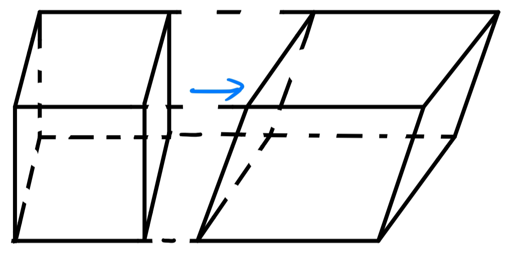
那么，P 4 Q 4 P_4Q_4 P 4 Q 4
最终得证！
推论
以上我们讨论的是两点透视的情况。如果是三点透视，或是一点透视呢？我们能得到什么相似的结论？
三点透视
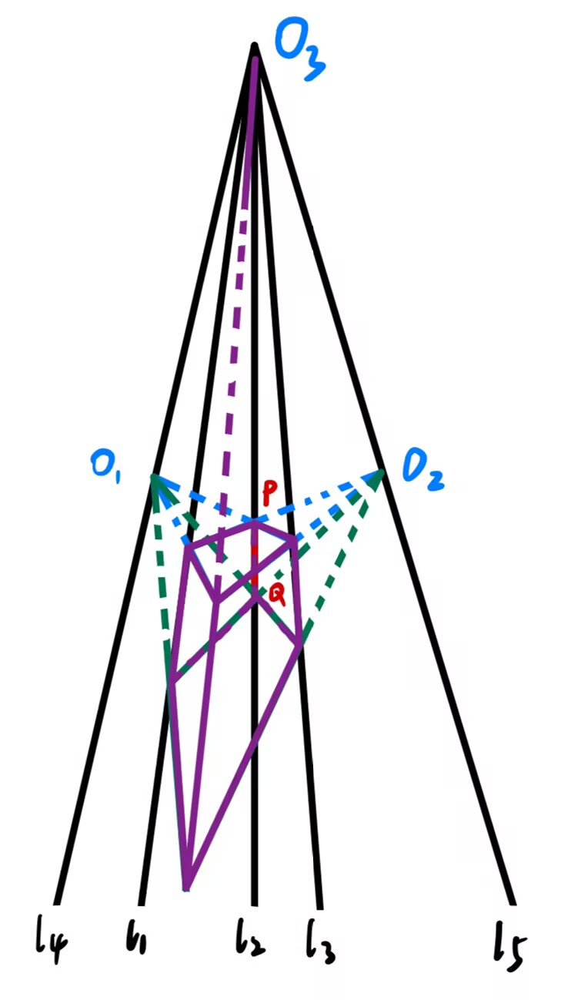
在这种情况下，P 4 Q 4 P_4Q_4 P 4 Q 4 l 1 , l 2 , l 3 , l 4 , l 5 l_1,l_2,l_3,l_4,l_5 l 1 , l 2 , l 3 , l 4 , l 5 透视中的几何原理初步 - 知乎 ）：
我们把视球面投影与球心投影复合，得到
λ π 0 ∘ σ : [ x = r sin θ cos φ y = r sin θ sin φ z = r cos θ ] ↦ [ θ φ ] ↦ [ x ′ = λ tan θ cos φ y ′ = λ tan θ sin φ ] \lambda \pi_{0} \circ \sigma: \begin{bmatrix} x = r \sin \theta \cos \varphi \\ y = r \sin \theta \sin \varphi \\ z = r \cos \theta \end{bmatrix} \mapsto \begin{bmatrix} \theta \\ \varphi \end{bmatrix} \mapsto \begin{bmatrix} x' = \lambda \tan \theta \cos \varphi \\ y' = \lambda \tan \theta \sin \varphi \end{bmatrix}
λ π 0 ∘ σ : ⎣ ⎢ ⎡ x = r sin θ cos φ y = r sin θ sin φ z = r cos θ ⎦ ⎥ ⎤ ↦ [ θ φ ] ↦ [ x ′ = λ tan θ cos φ y ′ = λ tan θ sin φ ]
考虑 R 3 \R^3 R 3
{ x = x 0 + t sin α cos β y = y 0 + t sin α sin β z = z 0 + t cos α \begin{cases}
x = x_0+t\sin\alpha\cos\beta \\
y=y_0+t\sin\alpha\sin\beta\\
z=z_0+t\cos\alpha
\end{cases}
⎩ ⎪ ⎪ ⎨ ⎪ ⎪ ⎧ x = x 0 + t sin α cos β y = y 0 + t sin α sin β z = z 0 + t cos α
其中 t t t ( x 0 , y 0 , z 0 ) (x_0,y_0,z_0) ( x 0 , y 0 , z 0 ) ( α , β ) (\alpha,\beta) ( α , β )
{ x ′ = λ x 0 + t sin α cos β z 0 + t cos α = λ tan α cos β + λ x 0 − z 0 cos β tan α z 0 + t cos α y ′ = λ y 0 + t sin α sin β z 0 + t cos α = λ tan α sin β + λ y 0 − z 0 sin β tan α z 0 + t cos α \begin{gathered}
\begin{cases}x' = \lambda \frac{x_0 + t \sin \alpha \cos \beta}{z_0 + t \cos \alpha} = \lambda \tan \alpha \cos \beta + \lambda \frac{x_0 - z_0 \cos \beta \tan \alpha}{z_0 + t \cos \alpha}\\
y' = \lambda \frac{y_0 + t \sin \alpha \sin \beta}{z_0 + t \cos \alpha} = \lambda \tan \alpha \sin \beta + \lambda \frac{y_0 - z_0 \sin \beta \tan \alpha}{z_0 + t \cos \alpha}\\\end{cases}
\end{gathered}
{ x ′ = λ z 0 + t c o s α x 0 + t s i n α c o s β = λ tan α cos β + λ z 0 + t c o s α x 0 − z 0 c o s β t a n α y ′ = λ z 0 + t c o s α y 0 + t s i n α s i n β = λ tan α sin β + λ z 0 + t c o s α y 0 − z 0 s i n β t a n α
令 t → + ∞ t\rightarrow+\infin t → + ∞
{ x ′ → λ tan α cos β y ′ → λ tan α sin β , ( x ′ , y ′ ) → λ π 0 [ ( θ = α , φ = β ) ] \begin{cases}
x' \rightarrow \lambda \tan \alpha \cos \beta \\
y' \rightarrow \lambda \tan \alpha \sin \beta
\end{cases}
, (x', y') \rightarrow \lambda \pi_0 [(\theta = \alpha, \varphi = \beta)]
{ x ′ → λ tan α cos β y ′ → λ tan α sin β , ( x ′ , y ′ ) → λ π 0 [ ( θ = α , φ = β ) ]
可以看到，直线在画布中的消失点就是直线所在方向的球面坐标在画布上的投影 。注意到此处当 α = π / 2 \alpha=\pi/2 α = π / 2 ( x ′ , y ′ ) (x',y') ( x ′ , y ′ )
现在我们研究这条直线上的点从 ( x 0 , y 0 , z 0 ) (x_0,y_0,z_0) ( x 0 , y 0 , z 0 ) t t t l ( t ) l(t) l ( t )
l ( t ) 2 = [ x ′ ( t ) − x ′ ( 0 ) ] 2 + [ y ′ ( t ) − y ′ ( 0 ) ] 2 = λ 2 ( 1 z 0 + t cos α − 1 z 0 ) 2 [ x 0 2 + y 0 2 + z 0 2 tan 2 α − 2 z 0 tan α ( x 0 cos β + y 0 sin β ) ] \begin{aligned}
l(t)^2 &= [x'(t) - x'(0)]^2 + [y'(t) - y'(0)]^2 \\
&= \lambda^2 \left( \frac{1}{z_0 + t \cos \alpha} - \frac{1}{z_0} \right)^2 \left[ x_0^2 + y_0^2 + z_0^2 \tan^2 \alpha - 2z_0 \tan \alpha (x_0 \cos \beta + y_0 \sin \beta) \right]
\end{aligned}
l ( t ) 2 = [ x ′ ( t ) − x ′ ( 0 ) ] 2 + [ y ′ ( t ) − y ′ ( 0 ) ] 2 = λ 2 ( z 0 + t cos α 1 − z 0 1 ) 2 [ x 0 2 + y 0 2 + z 0 2 tan 2 α − 2 z 0 tan α ( x 0 cos β + y 0 sin β ) ]
令 K 2 = x 0 2 + y 0 2 + z 0 2 tan 2 α − 2 z 0 tan α ( x 0 cos β + y 0 sin β ) K^2=x_0^2+y_0^2+z_0^2\tan^2\alpha-2z_0\tan\alpha(x_0\cos\beta+y_0\sin\beta) K 2 = x 0 2 + y 0 2 + z 0 2 tan 2 α − 2 z 0 tan α ( x 0 cos β + y 0 sin β )
l ( t ) = K λ z 0 t z 0 sec α + t ( Δ ) l(t)=\frac{K\lambda}{z_0}\frac{t}{z_0\sec\alpha+t}\quad (\Delta)
l ( t ) = z 0 K λ z 0 sec α + t t ( Δ )
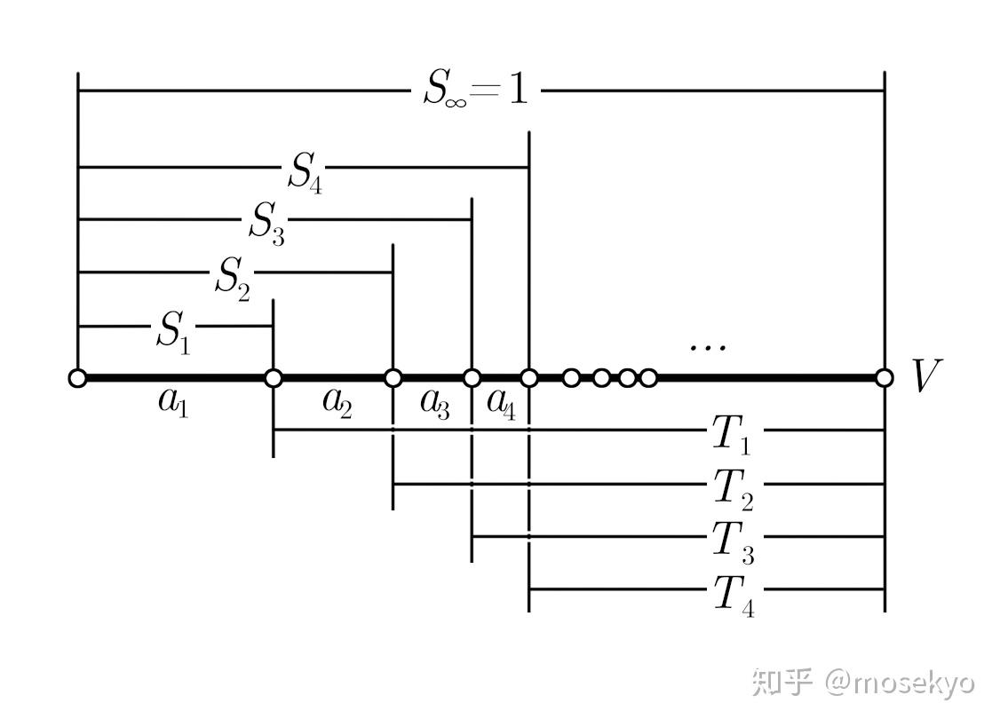
特别指出当 α = π / 2 \alpha=\pi/2 α = π / 2 K ≃ ∣ z 0 ∣ tan α , z 0 sec α + t ≃ z 0 sec α K\simeq|z_0|\tan\alpha,\ z_0\sec\alpha+t\simeq z_0\sec\alpha K ≃ ∣ z 0 ∣ tan α , z 0 sec α + t ≃ z 0 sec α
l ( t ) = λ ∣ z 0 ∣ t l(t)=\frac{\lambda}{|z_0|}t
l ( t ) = ∣ z 0 ∣ λ t
因此当直线与投影面平行时，直线上的等距点的项在画布上也是等距的 。
了解了以上知识后，让我们开始推导吧！
由结论 ( Δ ) (\Delta) ( Δ ) t → + ∞ t\rightarrow+\infin t → + ∞
l ( t ) = K λ z 0 l(t)=\frac{K\lambda}{z_0}
l ( t ) = z 0 K λ
我们设 P ( x P , y P , z P ) , Q ( x Q , y Q , z Q ) P(x_P,y_P,z_P),Q(x_Q,y_Q,z_Q) P ( x P , y P , z P ) , Q ( x Q , y Q , z Q ) t t t P Q PQ P Q P P P P O 3 PO_3 P O 3 ω \omega ω Q O 3 undefined = Ω P O 3 undefined \overlinesegment{QO_3}=\Omega\overlinesegment{PO_3} Q O 3 = Ω P O 3
t = z P 2 l P ( t ) sec α K P λ − z P l P ( t ) = z P 2 ω K P λ z P sec α K P λ − z P ω K P λ z P = z P ω sec α 1 − ω t=\frac{z_P^2 l_P(t)\sec\alpha}{K_P\lambda-z_Pl_P(t)}=\frac{z_P^2 \omega\frac{K_P\lambda}{z_P}\sec\alpha}{K_P\lambda-z_P\omega\frac{K_P\lambda}{z_P}}=\frac{z_P\omega\sec\alpha}{1-\omega}
t = K P λ − z P l P ( t ) z P 2 l P ( t ) sec α = K P λ − z P ω z P K P λ z P 2 ω z P K P λ sec α = 1 − ω z P ω sec α
Q Q Q t t t ( Δ ) (\Delta) ( Δ )
l Q ( t ) = Q O 3 undefined ⋅ ω z Q / z P ( 1 − ω ) + ω l_Q(t)=\overlinesegment{QO_3}\cdot\frac{\omega}{z_Q/z_P(1-\omega)+\omega}
l Q ( t ) = Q O 3 ⋅ z Q / z P ( 1 − ω ) + ω ω
接下来寻找 z Q , z P z_Q,z_P z Q , z P
Q O 3 undefined = Ω P O 3 undefined ⇒ ∣ y Q − y O 3 ∣ ∣ y P − y O 3 ∣ = Ω , y O 3 = λ tan α sin β ⇒ λ y 0 − z 0 sin β tan α z 0 + t Q cos α λ y 0 − z 0 sin β tan α z 0 + t P cos α = Ω ⇒ z 0 + t P cos α z 0 + t Q cos α = Ω \begin{gathered}
\overlinesegment{QO_3}=\Omega\overlinesegment{PO_3}\Rightarrow\frac{|y_Q-y_{O_3}|}{|y_P-y_{O_3}|}=\Omega,\ y_{O_3}=\lambda \tan \alpha \sin \beta\\
\Rightarrow \frac{\lambda \frac{y_0 - z_0 \sin \beta \tan \alpha}{z_0 + t_Q \cos \alpha}}{\lambda \frac{y_0 - z_0 \sin \beta \tan \alpha}{z_0 + t_P \cos \alpha}}=\Omega\Rightarrow\frac{z_0+t_P\cos\alpha}{z_0+t_Q\cos\alpha}=\Omega
\end{gathered}
Q O 3 = Ω P O 3 ⇒ ∣ y P − y O 3 ∣ ∣ y Q − y O 3 ∣ = Ω , y O 3 = λ tan α sin β ⇒ λ z 0 + t P c o s α y 0 − z 0 s i n β t a n α λ z 0 + t Q c o s α y 0 − z 0 s i n β t a n α = Ω ⇒ z 0 + t Q cos α z 0 + t P cos α = Ω
而我们又知道 z 0 + t P cos α = z P , z 0 + t Q cos α = z Q z_0+t_P\cos\alpha=z_P,z_0+t_Q\cos\alpha=z_Q z 0 + t P cos α = z P , z 0 + t Q cos α = z Q
z Q z P = Ω − 1 ⇒ l Q ( t ) = ω Ω 1 − ω + ω Ω ⋅ Q O 3 undefined \frac{z_Q}{z_P}=\Omega^{-1}\Rightarrow l_Q(t)=\frac{\omega\Omega}{1-\omega+\omega\Omega}\cdot\overlinesegment{QO_3}
z P z Q = Ω − 1 ⇒ l Q ( t ) = 1 − ω + ω Ω ω Ω ⋅ Q O 3
更简洁的形式：
l Q ( ∞ ) = ( 1 + ω − 1 Ω − 1 − Ω − 1 ) l Q ( t ) l_Q(\infin)=(1+\omega^{-1}\Omega^{-1}-\Omega^{-1})l_Q(t)
l Q ( ∞ ) = ( 1 + ω − 1 Ω − 1 − Ω − 1 ) l Q ( t )
于是，当 P Q PQ P Q l 2 l_2 l 2 P P ′ undefined = ω P O 3 undefined \overlinesegment{PP'}=\omega\overlinesegment{PO_3} P P ′ = ω P O 3 Q O 3 undefined = Ω P O 3 undefined \overlinesegment{QO_3}=\Omega\overlinesegment{PO_3} Q O 3 = Ω P O 3 Q Q ′ undefined = ω Ω 1 − ω + ω Ω Q O 3 undefined \overlinesegment{QQ'}=\frac{\omega\Omega}{1-\omega+\omega\Omega}\overlinesegment{QO_3} Q Q ′ = 1 − ω + ω Ω ω Ω Q O 3
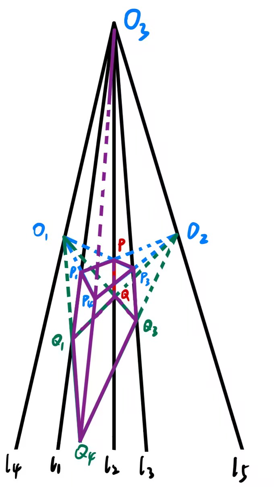
最后是关于 O 2 O_2 O 2 l 5 l_5 l 5
对于两点透视当中结论（1）和（2）的导出结论，我们相对应的结论是：在射影几何意义上，若空间中一直线平行于（或属于）一平面，那么直线的消失点位于平面的消失线上 。我们有：直线 Q 4 Q 3 Q_4Q_3 Q 4 Q 3 O 2 O_2 O 2 Q 3 P 1 Q_3P_1 Q 3 P 1 O 3 O_3 O 3 P Q Q 1 P 1 , P 3 Q 3 Q 4 P 4 PQQ_1P_1,P_3Q_3Q_4P_4 P Q Q 1 P 1 , P 3 Q 3 Q 4 P 4 l 5 l_5 l 5 P Q Q 3 P 3 , P 1 Q 1 Q 4 P 4 PQQ_3P_3,P_1Q_1Q_4P_4 P Q Q 3 P 3 , P 1 Q 1 Q 4 P 4 l 4 l_4 l 4
同样地，O 1 O 2 O_1O_2 O 1 O 2 是面 P 1 P P 3 P 4 , Q 1 Q Q 3 Q 4 P_1PP_3P_4,Q_1QQ_3Q_4 P 1 P P 3 P 4 , Q 1 Q Q 3 Q 4 的灭线 。在央点未发生变化的情况下，面 P 1 P P 3 P 4 P_1PP_3P_4 P 1 P P 3 P 4 在此过程中以 P 3 P P_3P P 3 P 为轴旋转 。面 Q 1 Q Q 3 Q 4 Q_1QQ_3Q_4 Q 1 Q Q 3 Q 4 在此过程中以 Q 3 Q Q_3Q Q 3 Q 为轴旋转 。
接下来与两点透视不同：当 O 2 O_2 O 2 l 5 l_5 l 5 P 1 Q 1 P_1Q_1 P 1 Q 1
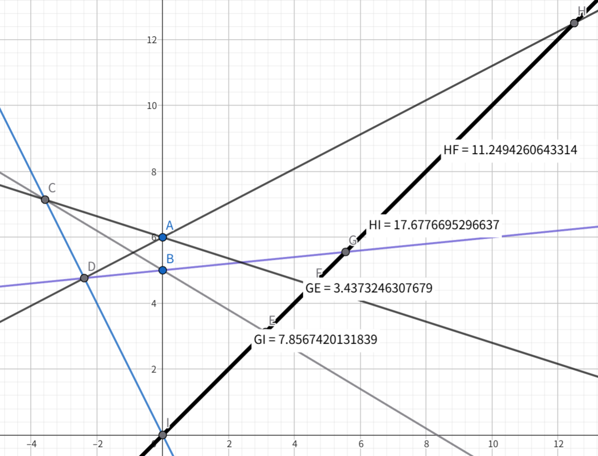
先给自己一点信心：GeoGebra 验证 Q 1 Q 1 ′ undefined = ω Ω ( 1 − ω ) + ω Q 1 O 3 undefined \overlinesegment{Q_1Q'_1}=\frac{\omega}{\Omega(1-\omega)+\omega}\overlinesegment{Q_1O_3} Q 1 Q 1 ′ = Ω ( 1 − ω ) + ω ω Q 1 O 3 P 1 Q 1 P_1Q_1 P 1 Q 1
继续推导！
对于 ∀ O 2 ∈ l 5 \forall\ O_2\in l_5 ∀ O 2 ∈ l 5 ω \omega ω P 1 P 1 ′ undefined = ω P 1 O 3 undefined \overlinesegment{P_1P'_1}=\omega\overlinesegment{P_1O_3} P 1 P 1 ′ = ω P 1 O 3 Q 1 Q 1 ′ undefined = ω Ω 1 − ω + ω Ω Q 1 O 3 undefined \overlinesegment{Q_1Q'_1}=\frac{\omega\Omega}{1-\omega+\omega\Omega}\overlinesegment{Q_1O_3} Q 1 Q 1 ′ = 1 − ω + ω Ω ω Ω Q 1 O 3 Ω = Q 1 O 3 undefined P 1 O 3 undefined \Omega=\frac{\overlinesegment{Q_1O_3}}{\overlinesegment{P_1O_3}} Ω = P 1 O 3 Q 1 O 3
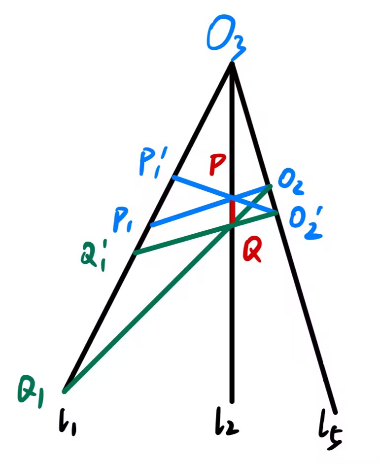
Q 1 Q 1 ′ undefined P 1 P 1 ′ undefined = Q 1 O 3 undefined 2 − P 1 Q 1 undefined ⋅ Q 1 Q 1 ′ undefined P 1 O 3 undefined 2 \frac{\overlinesegment{Q_1Q'_1}}{\overlinesegment{P_1P'_1}}=\frac{\overlinesegment{Q_1O_3}^2-\overlinesegment{P_1Q_1}\cdot\overlinesegment{Q_1Q'_1}}{\overlinesegment{P_1O_3}^2}
P 1 P 1 ′ Q 1 Q 1 ′ = P 1 O 3 2 Q 1 O 3 2 − P 1 Q 1 ⋅ Q 1 Q 1 ′
好吧，原谅我想不出来。那怎么办呢？建系！（
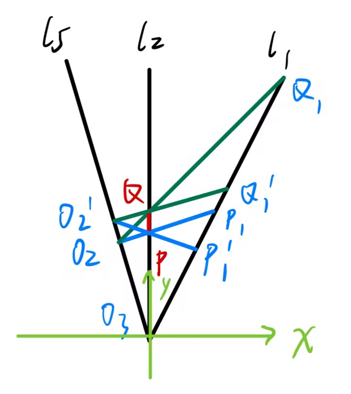
那么问题就转化成了（考虑四点均处于第一象限）：
1 x P 1 ′ − 1 x P 1 = 1 x Q 1 ′ − 1 x Q 1 \frac{1}{x_{P'_1}}-\frac{1}{x_{P_1}}=\frac{1}{x_{Q'_1}}-\frac{1}{x_{Q_1}}
x P 1 ′ 1 − x P 1 1 = x Q 1 ′ 1 − x Q 1 1
化简之后得到如此简洁的式子是我没有想到的。我认为其中一定有某种普遍的规律。转换回线段形式：
1 P 1 ′ O undefined − 1 P 1 O undefined = 1 Q 1 ′ O undefined − 1 Q 1 O undefined \frac{1}{\overlinesegment{P'_1O}}-\frac{1}{\overlinesegment{P_1O}}=\frac{1}{\overlinesegment{Q'_1O}}-\frac{1}{\overlinesegment{Q_1O}}
P 1 ′ O 1 − P 1 O 1 = Q 1 ′ O 1 − Q 1 O 1
运用导出叙述二的思想：P , Q P,Q P , Q
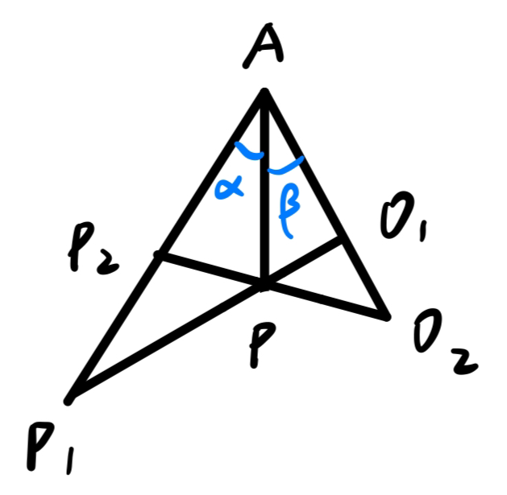
其中 ∠ α , ∠ β \angle\alpha,\angle\beta ∠ α , ∠ β
sin α A O 1 + sin β A P 1 = sin ( α + β ) A P ( 1 ) sin α A O 2 + sin β A P 2 = sin ( α + β ) A P ( 2 ) \begin{gathered}
\frac{\sin\alpha}{AO_1}+\frac{\sin\beta}{AP_1}=\frac{\sin{(\alpha+\beta)}}{AP}\quad(1)\\
\frac{\sin\alpha}{AO_2}+\frac{\sin\beta}{AP_2}=\frac{\sin{(\alpha+\beta)}}{AP}\quad(2)
\end{gathered}
A O 1 sin α + A P 1 sin β = A P sin ( α + β ) ( 1 ) A O 2 sin α + A P 2 sin β = A P sin ( α + β ) ( 2 )
张角定理的导出：
S △ A P 1 P + S △ A P O 1 = S △ A P 1 O 1 1 2 A P 1 ⋅ A P sin α + 1 2 A P ⋅ A O 1 sin β = 1 2 A P 1 ⋅ A O 1 sin ( α + β ) \begin{gathered}
S_{\triangle{AP_1P}}+S_{\triangle{APO_1}}=S_{\triangle{AP_1O_1}}\\
\frac{1}{2}AP_1\cdot AP\sin\alpha+\frac{1}{2}AP\cdot AO_1\sin\beta=\frac{1}{2}AP_1\cdot AO_1\sin{(\alpha+\beta)}
\end{gathered}
S △ A P 1 P + S △ A P O 1 = S △ A P 1 O 1 2 1 A P 1 ⋅ A P sin α + 2 1 A P ⋅ A O 1 sin β = 2 1 A P 1 ⋅ A O 1 sin ( α + β )
式子（1）和（2）可以导出
1 A P 1 − 1 A P 2 = sin α sin β ( 1 A O 2 − 1 A O 1 ) \frac{1}{AP_1}-\frac{1}{AP_2}=\frac{\sin\alpha}{\sin\beta}(\frac{1}{AO_2}-\frac{1}{AO_1})
A P 1 1 − A P 2 1 = sin β sin α ( A O 2 1 − A O 1 1 )
那么，
If ∠ α , ∠ β , A O 1 , A O 2 = Constant Then 1 A P 1 − 1 A P 2 = Constant \begin{gathered}
\text{If}\quad \angle\alpha,\angle\beta,\ AO_1,AO_2=\text{Constant}\\
\text{Then}\quad \frac{1}{AP_1}-\frac{1}{AP_2}=\text{Constant}
\end{gathered}
If ∠ α , ∠ β , A O 1 , A O 2 = Constant Then A P 1 1 − A P 2 1 = Constant
由于 P P P l 2 l_2 l 2 Q Q Q ∠ α , ∠ β , A O 2 , A O 2 ′ \angle\alpha,\angle\beta,\ AO_2,AO'_2 ∠ α , ∠ β , A O 2 , A O 2 ′
这说明，P 1 Q 1 P_1Q_1 P 1 Q 1 在此过程中沿 l 1 l_1 l 1 平移 。由此得到四边形 P 1 Q 1 Q 4 P 4 P_1Q_1Q_4P_4 P 1 Q 1 Q 4 P 4
同样地，在央点未发生变化的情况下，当 O 2 O_2 O 2 错切变换 。
仍然有此结论：P 4 Q 4 P_4Q_4 P 4 Q 4
一点透视
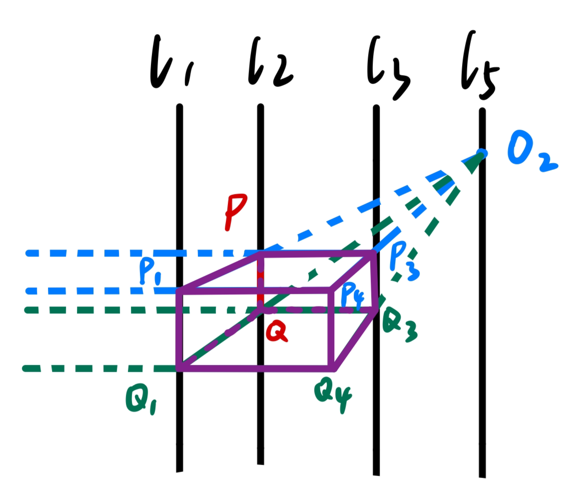
这种情况就更简单了。由于一点透视是两点透视的特殊情况，我们可以直接套用两点透视当中的结论。
但有个结论不同：当 O 2 O_2 O 2 O 2 O_2 O 2 P P 3 PP_3 P P 3 S 2 S^2 S 2 P P 3 PP_3 P P 3 O 2 O_2 O 2 P P 1 P 4 P 3 PP_1P_4P_3 P P 1 P 4 P 3 平移变换 。
我们甚至可以直接使用平面几何方法来解决这个问题：
P P 3 ∥ Q Q 3 , l 2 ∥ l 3 ⇒ P P 3 undefined = Q Q 3 undefined P P 3 ∥ P 1 P 4 ⇒ P 1 P 4 undefined P P 3 undefined = d l 1 → l 5 d l 2 → l 5 Q Q 3 ∥ Q 1 Q 4 ⇒ Q 1 Q 4 undefined Q Q 3 undefined = d l 1 → l 5 d l 2 → l 5 ⇒ P 1 P 4 undefined = Q 1 Q 4 undefined P 1 P 4 undefined = Q 1 Q 4 undefined , P 1 P 4 ∥ Q 1 Q 4 ⇒ P 1 P 4 undefined = P 4 Q 4 undefined , P 1 P 4 ∥ P 4 Q 4 ∥ P Q \begin{gathered}
PP_3\parallel QQ_3,\ l_2\parallel l_3\Rightarrow \overlinesegment{PP_3}=\overlinesegment{QQ_3}\\
PP_3\parallel P_1P_4 \Rightarrow\frac{\overlinesegment{P_1P_4}}{\overlinesegment{PP_3}}=\frac{d_{l_1\rightarrow l_5}}{d_{l_2\rightarrow l_5}}\\
QQ_3\parallel Q_1Q_4 \Rightarrow\frac{\overlinesegment{Q_1Q_4}}{\overlinesegment{QQ_3}}=\frac{d_{l_1\rightarrow l_5}}{d_{l_2\rightarrow l_5}}\Rightarrow \overlinesegment{P_1P_4}=\overlinesegment{Q_1Q_4}\\
\overlinesegment{P_1P_4}=\overlinesegment{Q_1Q_4},\ P_1P_4\parallel Q_1Q_4 \Rightarrow\overlinesegment{P_1P_4}=\overlinesegment{P_4Q_4},\ P_1P_4\parallel P_4Q_4\parallel PQ
\end{gathered}
P P 3 ∥ Q Q 3 , l 2 ∥ l 3 ⇒ P P 3 = Q Q 3 P P 3 ∥ P 1 P 4 ⇒ P P 3 P 1 P 4 = d l 2 → l 5 d l 1 → l 5 Q Q 3 ∥ Q 1 Q 4 ⇒ Q Q 3 Q 1 Q 4 = d l 2 → l 5 d l 1 → l 5 ⇒ P 1 P 4 = Q 1 Q 4 P 1 P 4 = Q 1 Q 4 , P 1 P 4 ∥ Q 1 Q 4 ⇒ P 1 P 4 = P 4 Q 4 , P 1 P 4 ∥ P 4 Q 4 ∥ P Q
（这给了我启发，我们是否能通过类似的办法解决两点透视甚至三点透视的问题呢？）
和叙述二相对应地，我们可以用解析几何的办法去定量地描述这个关系：
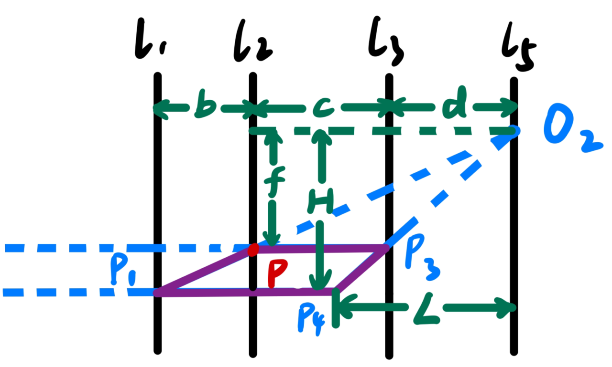
More precisely, Let d l 1 → l 2 = b , d l 2 → l 3 = c , d l 3 → l 5 = d , k O 1 = α , ∣ y O 2 − y P ∣ = f Then d P 4 → l 5 = b + c + d c + d ⋅ d f − α ( c + d ) f − α ( c + d ) α = 0 ⇒ d P 4 → l 5 = b + c + d c + d d ∣ y O 2 − y P 4 ∣ = b + c + d c + d ⋅ d f 2 − α ( c + d + c d f ) d f − α ( c + d ) α = 0 ⇒ ∣ y O 2 − y P 4 ∣ = b + c + d c + d f \text{More precisely, Let}\quad d_{l_1\rightarrow l_2}=b,\ d_{l_2\rightarrow l_3}=c,\ d_{l_3\rightarrow l_5}=d,\ k_{O_1}=\alpha,\ |y_{O_2}-y_P|=f\\
\text{Then}\quad d_{P_4\rightarrow l_5}=\frac{b+c+d}{c+d}\cdot\frac{df-\alpha(c+d)}{f-\alpha(c+d)}\\
\alpha=0\Rightarrow d_{P_4\rightarrow l_5}=\frac{b+c+d}{c+d}d\\
|y_{O_2}-y_{P_4}|=\frac{b+c+d}{c+d}\cdot\frac{df^2-\alpha(c+d+cdf)}{df-\alpha(c+d)}\\
\alpha=0\Rightarrow |y_{O_2}-y_{P_4}|=\frac{b+c+d}{c+d}f
More precisely, Let d l 1 → l 2 = b , d l 2 → l 3 = c , d l 3 → l 5 = d , k O 1 = α , ∣ y O 2 − y P ∣ = f Then d P 4 → l 5 = c + d b + c + d ⋅ f − α ( c + d ) d f − α ( c + d ) α = 0 ⇒ d P 4 → l 5 = c + d b + c + d d ∣ y O 2 − y P 4 ∣ = c + d b + c + d ⋅ d f − α ( c + d ) d f 2 − α ( c + d + c d f ) α = 0 ⇒ ∣ y O 2 − y P 4 ∣ = c + d b + c + d f
角度问题
细心的你可能已经发现了，我们在空间中的推导使用的是“平行六面体”这个描述。
什么时候导出的是长方体呢？我们在上文已经提到过，当三组棱的三个消失点构成一个正交系的时候，这个平行六面体就是一个长方体。
由 R 3 − { 0 } \R^3-\{0\} R 3 − { 0 } S 2 S^2 S 2
对于三点透视，三组平面的灭线分别为 l 4 , l 5 , O 1 O 2 l_4,l_5,O_1O_2 l 4 , l 5 , O 1 O 2 l 4 , l 5 , O 1 O 2 l_4,l_5,O_1O_2 l 4 , l 5 , O 1 O 2
对于两点透视，其中三组平面的灭线分别为 l 4 , l 5 , O 1 O 2 l_4,l_5,O_1O_2 l 4 , l 5 , O 1 O 2 l 4 , l 5 , O 1 O 2 l_4,l_5,O_1O_2 l 4 , l 5 , O 1 O 2 O 1 O 2 O_1O_2 O 1 O 2 l 4 , l 5 l_4,l_5 l 4 , l 5 O 1 O 2 ⊥ l 4 ( l 5 ) O_1O_2\perp l_4(l_5) O 1 O 2 ⊥ l 4 ( l 5 )
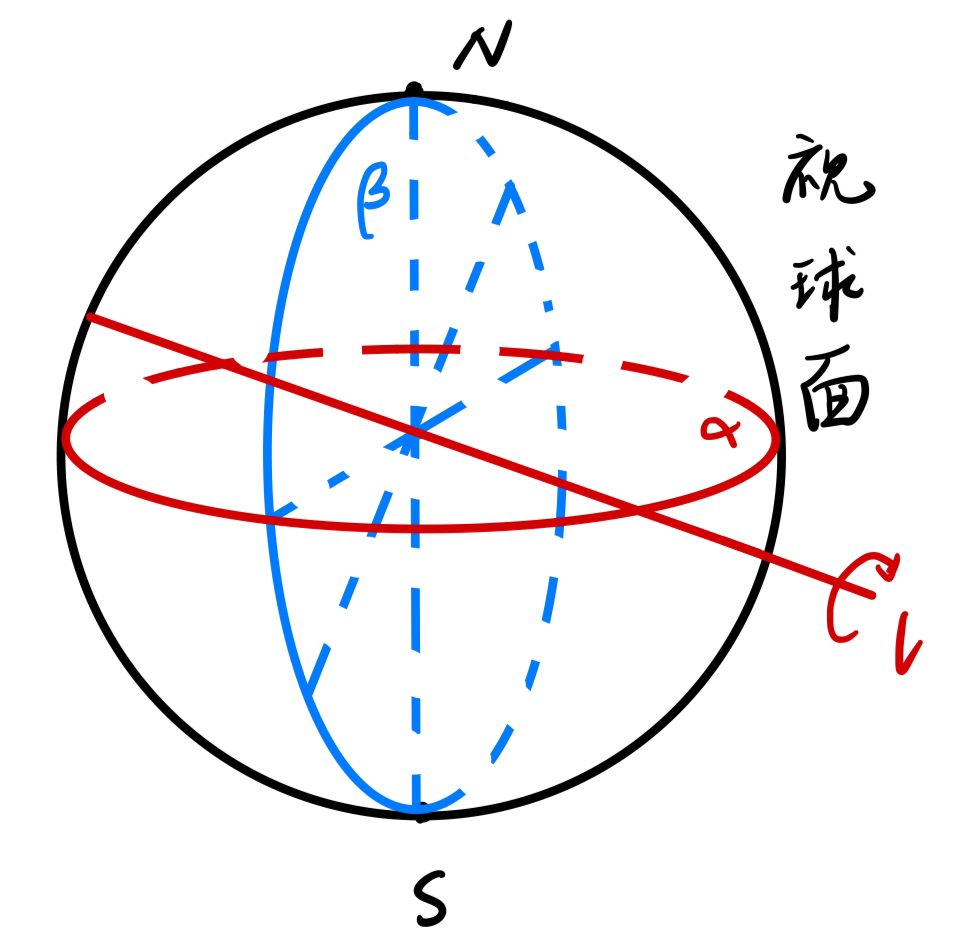
如图，与赤道圈 β \beta β α \alpha α l ( l ⊥ β ) l(l\perp\beta) l ( l ⊥ β ) l 4 , l 5 l_4,l_5 l 4 , l 5 β \beta β γ \gamma γ β \beta β γ \gamma γ l 4 , l 5 l_4,l_5 l 4 , l 5 O 1 O 2 ⊥ l 4 ( l 5 ) O_1O_2\perp l_4(l_5) O 1 O 2 ⊥ l 4 ( l 5 )
继续考虑 l 4 , l 5 l_4,l_5 l 4 , l 5 O O O O 1 O 2 O_1O_2 O 1 O 2
O O 1 ⋅ O O 2 = λ 2 OO_1⋅OO_2=\lambda^2
O O 1 ⋅ O O 2 = λ 2
这里的 λ \lambda λ l 4 , l 5 , O 1 O 2 l_4,l_5,O_1O_2 l 4 , l 5 , O 1 O 2
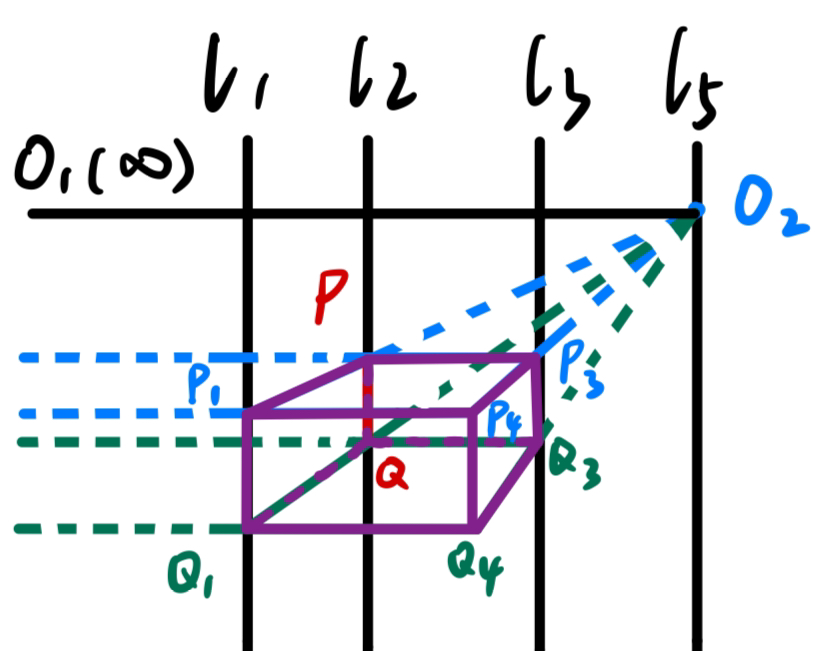
对于一点透视，其中三组平面的灭线分别为 { ∞ } , l 5 , O 1 O 2 ( O 1 O 2 ∥ P P 3 ) \{\infin\},l_5,O_1O_2(O_1O_2\parallel PP_3) { ∞ } , l 5 , O 1 O 2 ( O 1 O 2 ∥ P P 3 ) { ∞ } , l 5 , O 1 O 2 \{\infin\},l_5,O_1O_2 { ∞ } , l 5 , O 1 O 2
{ ∞ } \{\infin\} { ∞ } l 5 , O 1 O 2 l_5,O_1O_2 l 5 , O 1 O 2 { ∞ } \{\infin\} { ∞ } l 5 , O 1 O 2 l_5,O_1O_2 l 5 , O 1 O 2
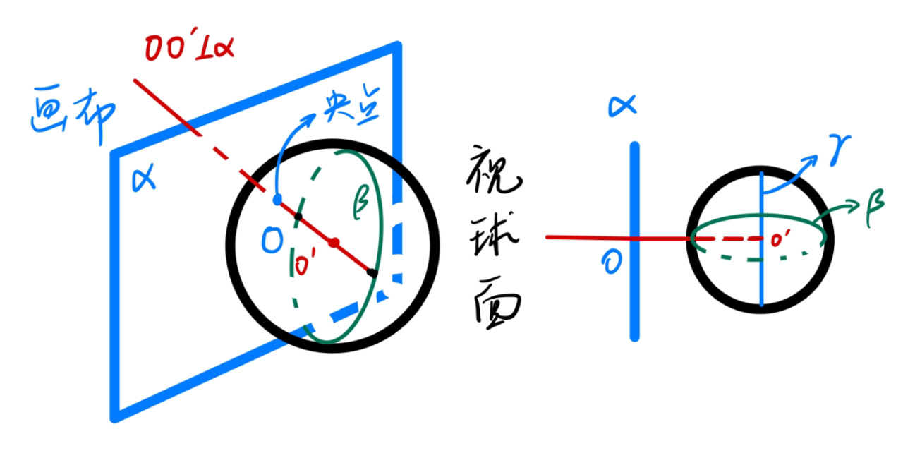
如图，平面的灭线过央点，那么灭线对应的赤道圈一定过视中心 O ′ O' O ′ O O O S 2 S^2 S 2 O O ′ OO' O O ′ { ∞ } \{\infin\} { ∞ } γ \gamma γ β \beta β α \alpha α
O O ′ ⊥ α , O O ′ ⊆ β ⇒ α ⊥ β α ⊥ β , α ∥ γ ⇒ γ ⊥ β OO'\perp\alpha,\ OO'\subseteq\beta\Rightarrow\alpha\perp\beta\\
\alpha\perp\beta,\ \alpha\parallel\gamma\Rightarrow\gamma\perp\beta
O O ′ ⊥ α , O O ′ ⊆ β ⇒ α ⊥ β α ⊥ β , α ∥ γ ⇒ γ ⊥ β
而 l 5 , O 1 O 2 l_5,O_1O_2 l 5 , O 1 O 2 l 5 ⊥ O 1 O 2 l_5\perp O_1O_2 l 5 ⊥ O 1 O 2
总结一下构成长方体的充要条件：
三点透视: 央点是以平行六面体三个消失点为顶点的三角形的垂心。两点透视: O 1 O 2 ⊥ l 4 ( l 5 ) O_1O_2\perp l_4(l_5) O 1 O 2 ⊥ l 4 ( l 5 ) O O O O 1 O 2 O_1O_2 O 1 O 2 O O 1 ⋅ O O 2 = λ 2 OO_1⋅OO_2=\lambda^2 O O 1 ⋅ O O 2 = λ 2 一点透视: l 5 ⊥ O 1 O 2 l_5\perp O_1O_2 l 5 ⊥ O 1 O 2
如果想更详细地了解平面透视中的角度关系，可以继续查看透视中的几何原理初步 - 知乎 的剩余部分。
写在最后
我在这篇文章当中讨论的是射影几何中有关透视变换的一小部分。由于我的知识和能力不足，不能根据一开始的叙述运用射影几何的知识直接推导出对应的结论，我相信一定存在对应的方法，我推导出的结论也肯定已经被其他人导出过（或者是等价的结论），关于此，就得麻烦看到这篇文章的各位了。
不过，这些限制也使得我能够学习到有关透视变换的很多知识。特别是由几个基本结论证明自己的猜想的过程，真的是很令人激动。
数学太美了。
说了这么一大堆，这些推理到底有什么用呢？我想了很久，可能有一个用处：
有三条平行线和一把没有刻度的直尺，我们就可以得到第四条平行线
感觉听起来挺好笑的，但说实话，可能这些推理对我个人而言意义更大。为什么我会对解析法导出的过程不满意，一直在寻求一种更为直观的解释呢？我想，可以用这篇博客 当中的一段话来表述：
不妨先来回顾一下我们关于几何的心路历程：从幼儿时期对周围物体形状的直觉感知，到小学对基础图形的长度面积度量，再到初中陷入点线关系的苦战，高中平面解析几何又总是算不正确、立体几何苦练空间想象力，大学空间解析几何刚开个头就去算微积分了。
这几天专注的思考与推理确实带给了我很多全新的体验，也让我回忆起了很多时候。
或许更重要的是，我借此机会走向高中时的自己，告诉他：“你看，你一直想知道的为什么，我终于弄明白了，没让你失望吧！”
期待有一天，未来的我也能这么告诉现在的自己。